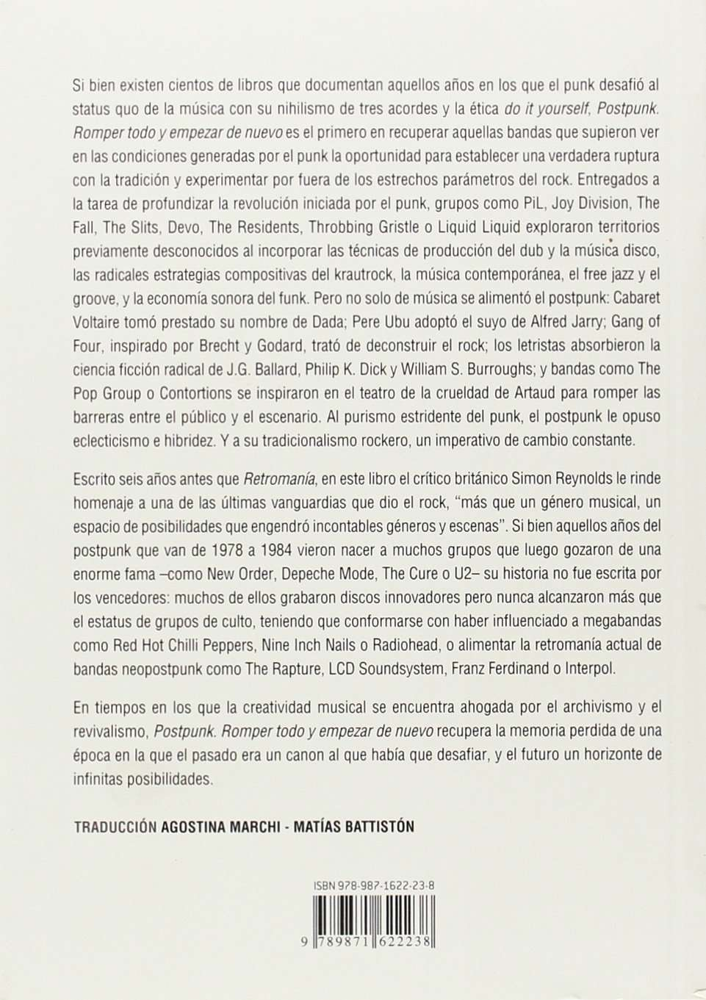

Hijo de una familia católica pr:1cticante, Murphy se rebeló contra su religión con canciones sacrílegas como "Scigmata Marcyr", en la que recitaba "En el nombre del Padre, del Hijo y del Espíritu Sanco" en latín, mientras que, durante los recitales, simulaba con mímica su propia crucifixión.
Debido a sus gestos heredados del shock rock y del Grand Guignol, la banda tenía mucho más en común con Alice Cooper que con David Bowie; 1 . "La suciedad es cercana a la antidivinidad", en alusión al dicho "Cleanliness is next to go<lliness" [la limpieza es cercana a la divinidad] . [N. del T.)
es decir, era genial, pero costaba tomarla en serio. Los integrantes tenían un dominio impresionante del aspecto teatral del rock y habían perfeccionado muchos de los trucos del oficio, como emplear luz muy blanca para proyectar sombras dramáticas en el escenario. "Es importante ir al teatro y escapar de la calle, utilizar el espacio, descubrir otro elemento", afirmó Murphy. A pesar de que sus álbumes sufrían de un exceso de pretensión, el grupo componía singles brillantes, como el art funk oscuro y retorcido de "A Kick in che Eye" y
"Spirit", una canción misteriosa y etérea. El sonido de la guitarra de Daniel Ash se asemejaba a los momentos más brutales de Gang of Four o Joy Division, sobre todo en sus primeras grabaciones, más orientadas al postpunk, como
"Terror Couple Kili Colonel" y "Bela Lugosi's Dead", en las que Ash producía todo tipo de ruidos y usaba múltiples efectos inspirados en el dub.
Si Bauhaus, The Banshees y The Birthday Party fueron bandas de una importancia crucial a la hora de cerrar la brecha entre el postpunk y el gótico, Killing Joke fue la cuarta banda que forjó el sonido y la sensibilidad del nuevo movimiento. Como las otras tres, el grupo empezó experimentando con el 496
postpunk; en su caso, eso significaba seguir de cerca los pasos de PiL. En 1 980, Jaz Coleman, cantante y tecladista, dijo al respecto que querían mantener los elementos funk del grupo de Lydon, pero sin la pátina "asquerosamente dulzona" de la música disco, a la que reemplazarían con "ruido machacante, distorsionado y abrasador". Esa tarea le correspondía al guitarrista Geordie, que transformó el sonido de Keith Levene en algo sulfúrico, cruel y casi inhumano. Coleman también añadía toques de disonancia y zumbidos con el sintetizador, además de su voz furibunda y amenazante. Ellos mismos llamaban a este estilo "música de tensión".
En un comienzo, Killing Joke parecía portar un mensaje vagamente político. Las fundas de sus singles y los avisos en miniatura que publicaban en las revistas de música británicas llamaban la atención debido a sus polémicas imágenes, como la foto de tropas alemanas haciendo el saludo nazi frente al Papa o un montaje de Fred Astaire con un sombrero de copa bailando cap encima de una trinchera llena de cadáveres de la Primera Guerra Mundial. Según explicó el cantante, el nombre Killing Joke [Broma letal] resumía su visión del mundo, "la sensación de alguien que en la Primera Guerra Mundial está a punto de salir de la trinchera para combatir [ ... ] y sabe que en diez minutos estará muerto, y piensa en el hijo de puta del gobierno que lo puso en esa si-
tuación. Eso es lo que estamos tratando de transmitir, la idea de algo que se siente como una broma, pero te termina matando".
Jaz Coleman, sin embargo, distaba de ser un cantante de protesta típico.
Hijo de una india brahmán de casta alta, Coleman era rico, erudito y contaba con una excelente formación musical (después de Killing Joke, de hecho, se convertiría en compositor de música clásica). La banda representaba casi su polo opuesto, una entidad hecha de puro barbarismo: los ritmos de Paul Ferguson, por ejemplo, eran siempre tribales y turbulentos. A partir de su segundo álbum, Whats TH!S For. . .! y hasta el magnífico Revelations, de 1982, el grupo se desembarazó de la influencia de PiL (todo lo que tuviera que ver con el dub y el sonido de "Death Disco") y se arrimó más a Black Sabbath: rock pesado, primitivo, con imágenes oscuras y apocalípticas.
Para Coleman, la música de la banda constaba de "sonidos de advertencia para una época de autodestrucción". El fin estaba cerca ("Le quedan como máximo dieciocho meses", afirmó en una entrevista), pero él estaba contento. La era posterior al fin "es lo que estoy esperando ahora", explicó, un momento durante el cual una nueva incivilización, más instintiva y brutal, resurgiría de 497
las cenizas como el ave fénix. Coleman agregó en una entrevista con NME:
"Imagino un mundo más salvaje en el futuro, ¿no? La nuestra es música que hace que a uno se le prenda fuego el corazón". De los cuatro elementos, el fuego era el preferido del grupo. Sus integrantes incluso contrataron a un tragafuegos, Dave el Mago, para que actuara con ellos en el escenario. "El fuego me parece el símbolo del poder de la voluntad", declaró Jaz. "Creo que se subestima el poder del individuo." Sin embargo, la música de la banda daba la impresión de exaltar más bien el poder de la muchedumbre.
La fascinación del gótico con lo irracional y salvaje muchas veces se extraviaba en terrenos bastante espinosos, y Killing Joke era un ejemplo claro de esto.
La retórica de Coleman -quien alababa la energía masculina, describía la guerra como el estado natural del mundo y vaticinaba con alegría el Juicio Final- se acere.aba demasiado a esa zona gris que existe entre lo nietzscheano y lo nazi. "La violencia de nuestro grupo no es la violencia en el plano de lo inmediato, sino la violencia masiva, la violencia que borbotea bajo tus pies, la violencia de la naturaleza vomitando", proclamó el cantante con solemnidad. "Y nosotros nos transformamos en esa violencia." Incluso algunos seguidores del género notaban que Killing Joke tenía un aura fascista, que el grupo catalizaba en sus recitales.
Las tendencias nazis latentes en el movimiento gótico eran un motivo de preocupación. La costumbre de provocar recurriendo a imágenes fascistas se puede rastrear hasta Joy Division y Siouxsie (quien, en sus comienws, portaba una esvástica y cantaba el imperdonable verso "Hay demasiados judíos para mi gusto"). The March Violets tomaron su nombre del término que usaban los alemanes para referirse a los oportunistas que se unieron al partido nazi en 1934, después de que Hitler se declarara Führer. La música de Kirk Brandon motivó comparaciones con el nazismo desde los inicios de su carrera con Theatre of Hate. Para peor, Brandon tenía las facciones clásicas del arquetipo ario y cantaba con un estilo operístico; editó los primeros discos de su banda a través del sello SS; y, junto con los otros integrantes, solía pasar "La cabalgata de las valquirias" de Wagner antes de cada recital. Sus temas más emblemáticos y alegóricos, como "Do You Believe in the Westworld?", aspiraban a la épica política, pero sus letras confusas dejaban entrever una ideología muy cuestionable. Lo que no podía negarse era el deseo del cantante de proyectarse como un líder mesiánico. "No somos una banda -declaró- somos un movimiento".
498
Los impulsos totalitarios de la subcultura gótica, sin embargo, se veían neu-tralizados por la otra gran pasión de sus seguidores, la cual apuntaba en la dirección opuesta y podía refümirse mediante la arcaica sentencia libertina de Aleister Crowley: "Lo que hagáis será ley". Aunque parezca extraño, considerando la atracción que sentían hacia lo prohibido, en realidad los cultores del gótico no le daban mucha importancia a las drogas. La decadencia que les interesaba consistía más bien en el fetichismo sexual y los looks vampfricos: medias de red, botas altas de cuero negro y un uso teatral de la sombra de ojos oscura. Debido al énfasis que el gótico ponía en la belleza exterior y los accesorios visuales, eran muchas las mujeres que gravitaban hacia esta nueva corriente. "Hasta el día de hoy, ninguna otra subcultura tuvo una participación femenina tan grande", se
ñaló Mick Mercer. Sin embargo, la gran cantidad de mujeres en la escena no impidió que esta rápidamente se degradara hasta convenirse en una suerte de versión postpunk del más machista de los géneros, el heavy metal.
Los primeros góticos, en general, compartían la mentalidad postpunk de The Banshees. El "rock 'n' roll" era algo que debía descartarse, darse por muerto. Sin embargo, The Sisters of Merey eran rockeros recalcitrantes. Fanáticos de The Birthday Party, los integrantes del grupo los imitaron adoptando un imaginario norteamericano y rechazando el new pop europeo. "Hay un montón
de bandas espantosas que están saliendo de Inglaterra, sobre todo de Londres", afirmó en 1983 Andrew Eldritch, cantante y cerebro del grupo. "Muchos se suben al escenario con esa actitud, ¿no?, de decir 'Miren, no somos una banda de rock'. Así que nosotros hacemos lo contrario, damos un paso al &ente y gritamos '¡Nosotros sí somos una banda de rock!' Y lo gritamos bien fuerte."
Estas eran declaraciones polémicas en una época en la que la mayor parte de los medios londinenses estaba dispuesta a hablar bien de cualquier tipo de música, mientras no fuese rock. La escena hipster de 1983 era una mezcolanza increíblemente amplia, que abarcaba géneros extranjeros (música go-go de Washington D.C., electrónica de Nueva York, tribal de África) y locales (el falso jazz de Sade; la falsa salsa de los payasos trajeados de Blue Rondo A La Turk; el falso total de Style Council, la banda de Paul Weller). De hecho, lo único que tenían en común todas esas tendencias era la ausencia absoluta de acordes potentes y distorsionados. Asqueados ante esta nueva generación, para la cual Nina Simone era un monstruo sagrado e Iggy Pop un don nadie, The Sisters of Merey le declararon la guerra al pop.
Eldritch, un intelectual educado en Oxford, decía admirar la estupidez y 499
"perseverancia" del heavy metal. Para su banda, el rock era menos un género musical en evolución que un repertorio de imágenes y afectaciones (usar lentes de sol a la noche, tener un cuerpo esquelético por el abuso de anfetaminas, vestirse íntegramente de negro, etcétera). Sus integrantes ni siquiera entendían ciertos aspectos básicos del rock, como la importancia de la autenticidad y la energía: usaban cajas de ritmos en lugar de un baterista de verdad y sus guitarras, en vez de sonar imponentes, eran más bien atmosféricas, etéreas e insustanciales, al igual que el humo de hielo seco que desplegaban sobre el escenario en vivo (un truco barato para generar mística, algo que la banda admitía).
Sin embargo, "The Temple of Love", editado en 1983, se convirtió en el himno gótico del año. Su única competencia era "Fatman" de Southern Death Cult, que llegó al puesto número uno de los rankings independientes poco después. Incluso para los estándares cada vez más modestos del género,
"Fatman" era un tema de rock paupérrimo; pero a esa altura, en cierto sentido, la música misma casi no importaba. Al ser teloneros de Theatre of Hate y Bauhaus, Southern Death Cult fue conquistando a los fans de esos grupos (y otros como Killing Joke y The Banshees) a medida que estos se separaban o pasaban al mainstream.
La banda parecía una cruza entre Bow Wow Wow y Led Zeppelin, con ritmos tribales y un cantante, lan Astbury, que lucía una cresta muy parecida a la de Anabella, además de varios collares de plumas y huesos de aves (accesorios que, uno imagina, se ampliaban cada ve:z que ordenaba pollo en el restaurante de turno). Astbury vivió cinco años en Canadá de muy joven, donde visitó varias reservas indígenas, y regresó al Reino Unido en 1977, justo a tiempo para participar con fervor en la revolución punk. Sin embargo, cuando la escena se disipó, el cantante quedó desorientado y buscó refugio espiritual en la cultura de los pueblos originarios de los Estados Unidos; el nombre de la banda, Southern Death Cult [Culto sureño a los muertos], lo sacó de una tribu del valle de Mississippi, que rendía tributo a sus ancestros erigiendo tótems y santuarios.
Después de varios cambios de formación, el grupo pasó primero a llamarse Death Cult y luego, simplemente, The Cult. Junto a la palabra "Death"
[muerte] desaparecieron los últimos vestigios góticos de su música. En muy poco tiempo y sin la más mínima vergüenza, The Cult se transformó en una banda de cock rock pelilarga como cualquier otra. Sus puntos de referencia 500
eran los clásicos de finales de los sesenta y principios de los setenta: The Doors, Steppenwolf, Led Zeppelin. El título de algunas canciones seguía evocando cierto aire intrépido, como "Revolution" y "Spirit Walkier", pero en 1985 The Cult encarnaba básicamente todo lo que Sex Pistols y el punk habían querido erradicar. lan Astbury luego se uniría a Ray Manzarek y Robbie Krieger para reemplazar a Jim Morrison en una banda de rock orientada exclusivamente a la nostalgia, The New Doors.
Si el gótico pasó del postpunk al rock ruidoso y egocéntrico, Echo and che Bu�nymen siguió el rumbo opuesto: en lugar de descender a lo oscuro, se elevó hacia la luz. El sonido limpio y celestial de sus guitarras y las voces suplicantes de sus integrantes parecían indicar que la banda buscaba la beatitud o la gloria. En sus comienzos, a lan McCulloch, el cantante principal, se lo comparaba con Jim Morrison. Y si bien su voz de barítono tenía un timbre similar, con mucho cuerpo y color, también dejaba entrever un elemento de inocencia adolescente que el cantante de The Doors no había tardado en perder debido a sus excesos y soberbia. Cuando Echo and che Bunnymen empezó a tocar en 1979, en Liverpool, se afirmó que eran los pioneros de una
"nueva psicodelia", a pesar de que en aquel entonces la banda no ingería ninguna sustancia más alucinógena que la cerveza. Después se los asoció con el
género que algunos llamaban "big music", un estilo de rock de los ochenta que unía el minimalismo postpunk con la ambición típica de las bandas de los sesenta, representado por grupos como The Waterboys y Simple Minds. Sin embargo, de todos sus contemporáneos, U2, los rivales de Echo and The Bunnyman, fueron quienes terminaron popularizando el sonido de este género.
Todos estos grupos se inspiraban en Television, la última banda de los sesenta o la primera en tocar rock de los ochenta, según a quién se le pregunte.
Uno de los grupos seminales de la escena de CBGB en Nueva York a mediados de los setenta, Television, por alguna razón, fue mucho más influyente en Inglaterra que en los Estados Unidos. NME predijo que su cantante y guitarrista principal, Tom Verlaine, iba a dominar la década siguiente como Bob Dylan había dominado la anterior. La banda incluso tuvo un par de hits en Gran Bretaña. Es raro, pero Verlaine y Richard Lloyd, el segundo guitarrista, enseñaron a las bandas británicas a tocar rock de una manera distinta a la norteamericana, ya que su estilo le debía poco y nada a Chuck Berry o cualquiera de los grandes del blues. Al escuchar por primera vez su álbum debut, Marquee Moon, The Edge, el guitarrista de U2, sintió "que todo había cambiado". "La guitarra 501
eléctrica hasta ese momento me parecía un instrumento agotado, poco original." Por idealistas que suenen los títulos de sus canciones -"Elevation", "Glory",
"The Dream's Dream"-, el sonido de Television no tenía nada de hippie ni de optimista: era duro, brillante y puro. Sus ecos pueden oírse en gran parte de la música británica de los ochenta, pero principalmente en los primeros dos álbumes de Echo and che Bunnymen, Crocodiles y Heaven Up Here.
Al escuchar Crocodiles, editado en 1980, lo primero que se nota es el enfoque minimalista del álbum. El bajo de Les Pattinson se encarga de las melodías principales, la afilada guitarra de Will Sergeant deja abundantes espacios vacíos y rehúye de los solos como de la peste, y la batería de Pete De Freitas toca apenas lo necesario para crear tensión y dinamismo. Después, claro, uno se maravilla de la precoz autoridad y potencia de la voz de McCulloch. Muchas de las canciones del grupo expresan dudas, angustia y desesperación -"Is chis che blues I'm singing?" [¿Acaso esto que canto es blues?], se pregunta McCulloch en "Rescue" -, pero la precisión y calidez del sonido de la banda provocan las sensaciones opuestas: confianza, vigor, esperanza.
El público de la banda coincidía en parte con el de Joy Division -jóvenes con sobretodo y el peso del mundo sobre sus hombros- y, en ciertos aspectos,
Heaven Up Here parece una respuesta a Closer, editado el año anterior. Ambos tratan los mismos temas: hipocresía, desconfianza, traición, potencial desperdiciado. En "The Disease", por ejemplo, McCulloch dice que su vida podría cambiar "si solo le dieran una oportunidad", pero después agrega: "If you get yours from heaven/ Don't waste it" [Si el cielo te la otorga/ No la dejes pasar].
Sin embargo, mientras que en Closer Jan Curtís está hipnotizado con sus propias visiones fúnebres, Heaven Up Here es un disco orientado hacia la luz. "We have no dark things" [No tenemos cosas oscuras], declara McCulloch en "No Dark Things", rechazando de lleno el espíritu apocalíptico y depresivo del gótico; unas pocas canciones después, el álbum termina con la incontenible euforia de "Ali I Want", una celebración del acto mismo de desear.
Complementando los espacios vacíos de su disco anterior con texturas de guitarras superpuestas, teclados, pistas múltiples y sonidos atmosféricos, Heaven Up Here logró que Liverpool cobrara una relevancia musical que no tenía desde la época de los Beatles. A diferencia de otras ciudades británicas, vista de afuera, Liverpool daba la impresión de no haber sido afectada por el punk.
502
En realidad, el caos de 1976 sí reactivó la escena musical de la ciudad, que había decaído durante la primera mitad de la década. "Pero nunca produjo ninguna banda de punk clásica ni nada parecido al Oi!", afirmó Paul Du Noyer, el corresponsal de NME en Liverpool en aquella época. El postpunk tampoco tuvo mucha suerte allí, o por lo menos no alcanzó el nivel de experimentación de Londres, Sheffield y Leeds, donde surgió el noise industrial de sintetizadores, el avant funk y el dub apocalíptico.
"Toda la cosa vanguardista del postpunk, digamos que a nosotros nos parecía bastante estúpida", explicó Bill Drummond, representante de Echo and the Bunnymen y cofundador de Zoo, un innovador sello discográfico independiente de Liverpool. En su opinión, la música de la ciudad no solo debía ser melodiosa, además "tenía que ser una fiesta. Las letras de McCulloch, en general, estaban motivadas por la angustia, pero la música en sí era gloriosa".
Exactamente lo mismo podía decirse de otros grupos postpunk locales de aquel entonces, como Wah!, Heat (famosos por sus acordes resonantes y crescendos infinitos), y la banda neopsicodélica The Teardrop Explodes, cuyo sonido Julian Cope, su cantante, describió como "gritos de alegría".
Cope, McCulloch y el líder de Wah!, Pete Wylie, habían integrado una
pseudo-banda juntos antes de hacerse conocidos, llamada The Crucial Three.
La existencia de este grupo se reduce mayormente a rumores y una buena dosis de exageración: apenas si grabaron un par de canciones y nunca llegaron a tocar en vivo. Este tipo de banda fantasma -como The Mystery Girls, The Nova Mob o A Shallow Madness- era característica de Liverpool. Casi todos los músicos medianamente importantes de la incestuosa corriente musical local habían formado un grupo juntos en algún momento. ''A la gente le gustaba actuar", señaló Du Noyer. "Se entretenían con el proceso de encontrar un nombre para la banda o diseñar la imagen y el concepto, pero no les gustaba la parte más aburrida, como conseguir equipos y ensayar."
Toda la escena se centraba en el club punk Eric's, una especie de laboratorio donde se probaban las futuras estrellas de la ciudad, como la banda Big in Japan. Creada por Drummond, sus integrantes eran la carismática rockera glam Jayne Casey; el futuro baterista de The Banshees, Budgie; el futuro cantante de Frankie Goes to Hollywood, Holly Johnson; Jan Broudie, quien luego sería productor y miembro de Lightning Seed; y Dave Balfe, quien más tarde cofundaría Zoo, tocaría los teclados en The Teardrop Explodes y se transformaría en un magnate de la industria de la música. Big in Japan era una mezcla de 503
Roxy Music, The Rocky Horror Show y el loquísimo grupo escocés de pop punk The Rezillos. "Una explosión de color" fue la frase que uti!i?..ó Drummond para describir a su grupo. "Exagerábamos al máximo en vivo. Y era absolutamente vergonzoso."
A diferencia de las bandas de Leeds -como Gang of Four y su ambivalencia hacia el entretenimiento o The Mekons, un grupo rebuscadamente normal-, los postpunk de Liverpool no sentían ningún pudor al peCS<.-guir la fama. "Stars are stars and they shine so hard" [Las estrellas son estrellas y brillan intensamente], cantaba McCulloch en "Stars Are Stars", un tema de Crocodile. Este tipo de letras grandilocuentes era común en las canciones del grupo, pero es posible que McCulloch también estuviera cantando sobre sus propias ambiciones de llegar al estrellato, una mezcla de encandilamiento y la confianza absoluta de que, algún día, él también alcanzaría el firmamento del rock. Obsesionado con Bowie (en una época llegó a pedir que lo llamaran "Duque", en referencia al Delgado Duque Blanco), McCulloch se pasó coda su adolescencia sintiendo que "había una enorme cámara en el cielo grabándome". "El primer verso de 'Going Up', de Crocodiles, era la frase '¿Acaso no están mirando mi película?' (es terrible, lo sé). Se suponía que iba a ser solo un chiste aislado, pero me entusiasmé."


De joven, McCulloch no parecía tener pasta de estrella. Miope hasta la exageración, usaba "unos anteojos de aviador azules horrendos, a menudo sostenidos con cinta adhesiva, porque se caían a pedazos", señaló Drummond. Pero más allá de los lentes y de su gran timidez, McCulloch había nacido para el mundo del espectáculo. Poseía una belleza luminosa, labios prominentes y pelo enredado, y había pasado horas frente al espejo perfeccionando el arte de la presencia escénica y la proyección corporal. Estaba tan seguro de su destino como músico que rechazó la oportunidad de ir a la universidad y se pasó dos años sin hacer nada, esperando que se formara casi por arte de magia la banda perfecta a su alrededor. Y así fue.
Los lectores de NME votaron a Echo and the Bunnymen como el segundo mejor grupo del país a comienzos de 1982 y a Heaven Up Here como mejor álbum de 1981. Se trataba de un gesto de protesta contra el new pop de parte de la silenciosa mayoría de los seguidores del postpunk, furiosos por haber comprobado durante los doce meses previos que, aparentemente, cualquier banda podía volverse popular y ganarse el respeto de la crítica mientras no fuera 504
británica, usara guitarras ni estuviera integrada solo por hombres: es decir, mientras no fuese el tipo de grupo que esta audiencia prefería. Así, Echo and the Bunnymen de a poco conquistaba el público que había quedado huérfano después de la separación de Joy Oivision, aunque no eran los únicos. U2
también contaba con una aceptación cada vez mayor.
No es coincidencia, por tanto, que Ian McCulloch empezara a criticar a Bono y compañía, afirmando que sus canciones eran "música para plomeros y obreros", mientras que las de Echo and the Bunnymen "estaban hechas para los océanos y las montañas". El cantante había captado con perspicacia la amenaza que representaba U2: después de todo, eran sus mayores rivales en ese mundo post-Joy Division. Sin embargo, una parte importante de los antiguos seguidores de lan Curtis también había sucumbido a la tentación del new pop. "Lo que muchos denominan 'mentalidad new pop' no es más que resignación", explicó Andy McCluskey, cantante de Orchesrral Manoeuvres in the Dark, banda synthpop de Liverpool. Para McCluskey,
este género representaba un paso atrás respecto de la intensidad visionaria encarnada por Ian Curtis. "Creo que Joy Division fue el último grupo que apareció para buscar algo interesante." Pero quienes no estaban convencidos con el sueño new pop seguían esperando a que apareciera una banda con vi-
sión propia, que promoviera un idealismo cautivante y se ganara la devoción de su público.
Ese era, precisamente, el objetivo de U2. Su primer hit, "I Will Follow", dejaba en claro que sus integrantes estaban en busca de nuevos seguidores.
Antes, además, habían grabado su primer single, " 1 1 O' Clock Tick Tock", con Martín Hannett como productor, y otro inspirado en lan Curtís, "A Day Without Me". En ese tema, Bono hablaba del fallecido cantante, que miraba "el mundo que dejé atrás". Era como si Bono se estuviera preparando conscientemente para reemplazar a Curtis. Según Tony Wilson, no cabía duda al respecto. "Dos meses después de la muerte de lan, trajeron a U2 a mi oficina en Granada TV, porque querían darlos a conocer, y recuerdo que Bono se sentó en mi escritorio y me dijo lo mucho que lo había afectado la muerte de lan [ ... ], que lan era el cantante número uno de su generación, y que él, Bono, ¡sabía que solo llegaría a ser el número dos!", contó entre risas Wilson. "Y después agregó algo más. Algo como: 'Ahora que se ha ido, te prometo que lo haré por él'. Creo que lo dijo de una manera un poco menos ridícula, ¡pero no mucho!"
SOS
En 1983, estos nuevos "jóvenes gloriosos" alcanzaron la fama, con el respaldo de todos los que no se habían sumado a la escena gótica y ahora creían haber encontrado, al fin, una corriente trascendente, la big music. En febrero, tanto Echo and the Bunnymen como U2 tuvieron sus primeros hits en el Top 1 O del Reino Unido, "The Cutter" y "New Year's Day", respectivamente. En esta línea, y luego de incursionar brevemente en el new pop, Simple Minds volvió al género al que estaba destinado, el art rock para las masas, y logró una serie de hits cada vez más exagerados, cuyas letras, a cargo de Jim Kerr y llenas de descripciones románticas e idealistas, evocaban asombro y sed de aventura.
Las imágenes naturistas y desmesuradas se volvieron algo frecuente en la música británica durante 1983 y 1984, desde canciones como "The Big Music",
"A Pagan's Place" y "The Whole of the Moon" de The Waterboys hasta hits de Big Country como "Fields of Fire (400 Miles)" o "In a Big Country". Este fenómeno no se limitaba al mainstream. The Blue Orchids, banda formada por Martin Bramah y Una Saines, ex integrantes de The Fall, llegó a la cima de los rankings independientes con The Greatest Hit (Money Mountain), un magnífico álbum de neopsicodelia lisérgica, con versos muy poéticos sobre el paganismo y el panteísmo. Su emblemático tema "Dumb Magician" terminaba con
un desafiante llamado a la trascendencia ("La única salida está en lo alto") mientras que "Mad as the Mist and Snow" incluía citas de W.B. Yeats. The Blue Orchids fueron teloneros de Echo and the Bunnymen durante su gira por Gran Bretaña en 1981 y, en cierto sentido, ambos grupos (uno desde el underground y el otro desde el mainstream) perseguían el mismo ideal, "la gloria más allá de todas las glorias", en palabras de Bill Drummond. Esto podía verse en las tapas de sus discos: The Greatest Hit mostraba cómo el sol se asomaba por detrás de las montañas, mientras que Heaven Up Here retrataba hermosamente a los cuatro integrantes de la banda en la playa, mirando el mar, bajo un cielo turquesa.
Además de la grandilocuencia lírica y visual, estos grupos compartían un vínculo con la cultura celta. Todos provenían de Escocia, de Irlanda, o de ciudades con una considerable población irlandesa como Liverpool y Manchester.
Por otro lado, solían investir su búsqueda de "gloria indefinible" mediante la adopción de una vaga temática militar o un tono mesiánico. Echo and the Bunnymen, por ejemplo, usaba camuflaje, humo y efectos de iluminación in-506
geniosos para crear una atmósfera bélica en sus recitales de 1980 y U2 se embarcó en una cruzada a favor del pacifismo con su tercer álbum, �r. Durante la gira que acompañó el álbum, B¿no recorría el escenario de punta a punta agitando, mientras el grupo tocaba, una bandera blanca.
A diferencia de Echo and the Bunnymen, cuya "misión" era bastante nebulosa, nadie podía dudar del carácter moral de U2. El suyo era punk positivo de verdad, un intento de utilizar, por primera vez, la energía del rock para algo constructivo. En una entrevista al comienzo de su carrera, Bono descalificó la insurrección de Sex Pistols, considerándola una "estafa". "¿No te das cuenca de que nosotros nos estamos rebelando contra la idea de la rebelión?", agregó. Tres de los integrantes de la banda -Bono, The Edge y el baterista Larry Mullen- se habían convertido a un grupo cristiano llamado Shalom.
"Me encantó la idea de volver a nacer", explicó Bono a la revista Mother ]ones
en 1989. "En realidad, ¡creo que todos deberíamos renacer cada día!" A los veinte años, la idea de "rendirse diariamente" y sacrificarse por una causa común extasiaba a Bono y sus colegas de un modo sublime.
La fe permeaba cada detalle de los primeros álbumes de U2, desde la fría incandescencia de la guitarra de The Edge hasta lo que el crítico Richard Cook denominó el "invitador éxtasis" del cantante. "Sería un error que di-
jera 'sí, podemos cambiar el mundo con una canción"', le dijo Bono a Trouser
Press. "Pero cada vez que empiew a componer ¡es justo lo que intento hacer!"
Los ídolos de la banda eran Bob Marley, que combinó a la perfección religión con indignación política, y The Clash, aunque U2 eligió referentes políticos más universales y humanistas que los de Strummer: Martin Luther King y el movimiento del sindicato polaco Solidaridad, en lugar de las Brigadas rojas y el sandinismo.
Lo que evitaba que U2 cayera en la mera santurronería era la energía de su rock post-Television. "I Will Follow", por ejemplo, parecía el equivalente irlandés de "Public lmage", de PiL. Los acordes radiantes de The Edge y la voz apasionada de Bono generaban una reacción muy particular que terminaría definiendo a la banda, una suerte de elevación espiritual completamente ajena al cuerpo. Su música nunca hacía mover las caderas; era excitante, pero asexuada e imposible de bailar. Este estilo marcial dependía en gran medida de Larry Mullen, quien había aprendido a tocar la batería en la banda de música de su escuela.
Para entender a U2, la palabra clave es "infancia", patente desde los rit-507
mos de marcha escolar y la voz de coro de iglesia del cantante hasta la hermosa foto de un niño rubio de seis años en la contratapa de su primer álbum,
Boy. Este disco tenía temas como "Stories for Boys" o "lnto the Hear", en los que Bono decía que uno debía volver "al corazón de la niñez", para encontrar la cándida pureza de espíritu que se pierde con los años. En aquel entonces, según afirmaba el cantante, él quería que, en sus recitales, el público se sintiera purificado espiritualmente, como si se tratara de un renacimiento.
Para U2, todo debía hacerse a gran escala. De ahí la exageración de las letras, la voz, el sonido, el sentido de propósito, la ambición (U2 siempre aspiró a ser el grupo más importante del mundo). "Si nos quedamos en clubes pequeños, pronto tendremos mentes pequeñas y terminaremos componiendo música pequeña también", explicó Bono a Trouser Press. Cuando se editó �r,
en 1 983, el grupo entró en la categoría de pesos pesados, llegando a la cima de los rankings en el Reino Unido y al puesto número doce en Norteamérica.
La subsiguiente gira por los Estados Unidos quedó documentada en el álbum en vivo Under a Blood Red Sky, recital grabado en un anfiteatro al aire libre en Colorado, que se transmitió por MlV y del que luego se extrajo lo que sería el videoclip de "Sunday Bloody Sunday". Cuando el video comenzó a emitirse
con frecuencia en MTV, U2 quedó a un paso del megaestrellato. En 1984, con
"Pride (In the Name of Love}", lo alcanzaron.
No obstante, el álbum que acompañó esa canción, The Unforgettable Fire, era sorprendentemente sutil, ya que reemplazaba los estribillos exuberantes por melodías suaves y atmosféricas. El coproductor, Brian Eno, animó a la banda a crear composiciones sonoras que permitieran a la audiencia ver lo que el grupo trataba de expresar; es decir, hacer música literalmente visiona
ria. The Edge también decidió dejar de lado su experticia y reputación como guitarrista para experimentar con los teclados y ocuparse del "espectro atmosférico" de las canciones. Lo que era bastante lógico, ya que de alguna manera siempre había utilizado la guitarra como un sintetizador para crear capas de sonidos y arabescos melódicos, en lugar de componer riffs más típicos.
Evitando los solos y la distorsión sucia, The Edge recurría a efectos y técnicas como el eco, los slides, los armónicos y el sustain prolongado; el resultado era un conjunto de sonidos amorfos que retenían, sin embargo, cierta cualidad orgánica. En The Unforgettable Fire, de hecho, se convirtió en el 508
guitarrista más cinematográfico del rock: el tema principal del álbum, por ejemplo, evoca a la perfección la majestuosidad de un ocaso cualquiera o la Vía Láctea en una noche estrellada.
Los integrantes de Echo and the Bunnymen, por otro lado, mantenían un delicado equilibrio entre los gestos enfáticos y la distancia irónica. McCulloch usaba palabras como "Cielo" de modo tal que se volvían significantes brumosos, supuestamente vinculados a cierta perfección inimaginable o sobrenatural, pero sin dar demasiados detalles sobre la naturaleza de la espiritualidad que evocaba y prodigando chistes para no caer en la afectación. "Había muchos puntos en común entre nuestro público y el de U2", señaló el cantante en 1989. "Pero creo que a quienes escuchaban U2 les gustaba la arenga, y quienes nos escuchaban a nosotros preferían el sarcasmo."
Después del tortuoso tercer álbum de la banda, Porcupine, un disco de transición, en 1984 se editó Ocean Rain, una obra prolija, con arreglos orquestales y, gracias a los gemidos orgásmicos de "Thorn of Crowns", contenido erótico explícito, algo nuevo para el grupo. La música de Echo and che Bunnymen siempre había sonado gloriosamente gris, pero ahora se había vuelto tecnicolor, en especial, en canciones románticas y lánguidas como "The Killing Moon", con abundantes arreglos de cuerdas. A diferencia del resto de
la escena big music, en este álbum el grupo se alejaba del rock y se sumergía en el pop más puro. Según McCulloch, Ocean Rain era "música para besarse", frase que ponía en evidencia el rasgo del grupo que más atraía a sus seguidoras adolescentes: los notorios labios del cantante. La estrategia funcionó. Irónicamente, los integrantes de Echo and the Bunnymen, la banda que tanto había contribuido al resurgimiento del rock en la era del new pop, se convirtieron en estrellas pop convencionales. "Missing the point of our mision/ Will we become misshapen?" [Si erramos el objetivo principal de nuestra misión/ ¿Nos deformaremos?], se había preguntado antes McCulloch en Porcupine, un álbum confuso y decepcionante. Sin embargo, a pesar de su ropa camuflada y de la retórica abstracta, este grupo no era como U2: sus integrantes, en realidad, no tenían ninguna misión, más allá de exorcizar la tristeza y celebrar lo maravilloso que es existir.
509
CAPÍTULO 22
TOMAR POR ASALTO EL SIGLO XX:
ZZT, THE ART O F NOISE
Y FRANKIE GOES TO HOLLYWOOD
Al final de su período como representante de Bow Wow Wow, Malcolm Melaren 511
viajó a Nueva York en agosto de 1981 para acompañar el inicio de la primera gira de la banda por los Estados Unidos. Durante su estadía, el ex manager de Sex Pistols emprendió una suene de safari etnomusicológico por el sur del Bronx, guiado por uno de los integrantes de Gray, Michael Holman, quien solía oficiar de embajador del mundo del grafiti y el hip-hop. Así, Melaren fue testigo del breakdancing, el scratching y el rap in situ, y se fue de la ciudad con la absoluta convicción de que el hip-hop era punk negro. Por si fuera poco, la manera en que los DJ usaban temas viejos para hacer música nueva representaba el tipo de piratería cultural que este defensor del amateurismo tanto apreciaba.
En 1982, cuando los rankings del Reino Unido se encontraban bajo el dominio absoluto del new pop, Melaren llegó a la conclusión de que estaba a punto de estallar una nueva escena basada en el redescubrimiento de la música étnica sin pretensiones: el público, afirmaba, recibiría con los brazos abiertos cualquier cosa que sonara "auténtica'' -el pop sudafricano, la música hillbilly de los Montes Apalaches, el merengue dominicano, el zydeco, los ritmos cubanos- como consecuencia de un nuevo rechazo hacia el pop "manufacturado". Para Melaren, el hip-hop también era una especie de folklore urbano.
La debacle de Bow Wow Wow, además, lo convenció de que debía liderar per-
sonalmente su próximo proyecto y convertirse en una estrella por cuenta propia. Sin embargo, todavía hacía falta un productor que pudiera convertir en algo coherente su más reciente mezcla de ideas subversivas: una combinación de hip-hop y rap con ritmos folklóricos provenientes del mundo entero.
Aunque parezca irónico, Melaren recurrió a alguien que se especializaba en el tipo de pop súper prolijo que él quería exterminar: Trevor Horn. Después del increíble éxito de The Lexicon of Love de ABC, Horn era el productor más buscado del momento, y Spandau Ballet -la antigua banda new romantic que había dado un paso en falso al abandonar el synthpop e incursionar en el funk blanco- se moría por trabajar con él. Los integrantes del grupo estaban desesperados por adoptar el sonido exuberante de ABC, y a Horn también lo cautivaba la idea de repetir su último éxito sin tener que tomarse el trabajo de innovar demasiado. No obstante, Melaren despertó su sed de aventura. "Me interesaba Malcolm, parecía divertidísimo", explicó. La colaboración entre ambos estaba destinada a marcar un punto de inflexión en su carrera y en la historia del pop británico.
Sl2
El ex Maquiavelo y el productor estrella no habrían podido formar una pareja más dispareja. Para Melaren, Horn era el principal responsable del carácter asexuado e inocuo que detestaba del new pop; Horn, por su parte, pensaba que Sex Pistols era un fraude, ya que su oído le decía que Never Mind the Bollocks
había sido un producto creado meticulosamente en el estudio. A pesar de sus diferencias, sin embargo, se llevaban bien. "Malcolm es muy simpático", señaló Horn. Melaren, por su parte, se entusiasmó con la idea de ampliar los horizontes musicales de su nuevo colaborador, arrastrándolo por todo el planeta para llevar a cabo su proyecto, cuyo título provisional era Follt Dances of the World.
Sin embargo, debido a limitaciones presupuestarias, ese recorrido mundial tuvo que reducirse a una visita a Sudáfrica y una larga estadía en la cosmopolita Nueva York, donde la gran cantidad de músicos de todo el mundo permitía simular un enfoque globalizado. En Soweto, un pueblo de Sudáfrica, Melaren encontró intérpretes callejeros, a quienes Horn grabó tocando canciones populares y tradicionales. Melaren registraría algunas de ellas como composiciones propias más adelante, y uno de estos temas afro pop incluso se convertiría en un enorme hit en Gran Bretaña a comienzos de 1983, "Double Dutch".
Para ese entonces, Melaren ya era un habitué de los rank.ings, después de haber llegado al Top 1 O del Reino Unido a fines de 1982 con su single "Buffalo
Gals", una fusión bizarra entre hip-hop y música bailable tradicional de los Apalaches, que vendió medio millón de unidades a pesar de la sordera y falta de ritmo incurables de este manager devenido cantante. Siguiendo la vetusta tradición del robo en el hip-hop, el tema tomaba la melodía y el título de un baile folklórico norteamericano, mientras que Melaren recitaba versos como
"Four buffalo gals go 'round the outside/ And do-si-do with your pardners"
[ Cuatro chicas de Buffalo den rondas por afuera/ Y bailen el do-si-doh con sus parejas], encarnando una precaria cruza entre un director de baile sureño y un DJ del Bronx. Los DJ y caperos del World's Famous Supreme Team se encargaron del scratching (que hizo aquí su primera aparición en el pop mainstream) y agregaron frases enigmáticas, como "She's looking like a hobo" [Ella parece una indigente]. En la cultura dance del Reino Unido, "Buffalo Gals" es considerado hoy un himno del hip-hop, y su extraño collage de beats, melodías de bajo y samples lo convirtieron en un tema seminal de géneros como el jungle y el trip-hop.
Para unificar esta mezcla tan extraordinariamente delirante, Horn acudió a un equipo de músicos y técnicos profesionales, integrado por el ingeniero 513
Gary Langan y la arreglista y tecladista Anne Dudley (con quienes había trabajado en The Lexicon of Love) y el programador y experto en informática J .J.
Jeczalik. Como carecía por completo de habilidad para tocar instrumentos o cantar, Melaren aportó una gran cantidad de ideas originales, pero muy poco material musical en sí. Para realizar "Buffalo Gals" y el álbum que acompañaba la canción (ahora llamado Duck Rock), el equipo de Horn tuvo que ensamblar las variopintas partes del proyecto y llenar numerosas lagunas. "Anne se encargaba de la música y J.J., de los ritmos", observó Horn. Durante estas explosivas sesiones en el estudio, nació un notable espíritu de colaboración entre Langan, Jeczalik y Dudley. El trío se transformaría en la base de Art of Noise, el siguiente proyecto que produciría Horn, y el más ambicioso de su carrera. "Duck Rock demostraba que uno podía editar un disco con material muy diverso", afirmó Dudley, cuyo papel crucial en la grabación se ve reflejado en los créditos de las composiciones, de los que se le otorgaron una tercera parte. "En ese sentido, fue como un prototipo para los futuros álbumes de nuestra banda."
La creatividad de Melaren era tan caótica que, incluso antes de que Duck
Rock saliera a la venta, él ya estaba elucubrando su próxima creación, un disco que combinaría el pop con la ópera. De hecho, efectivamente lograría un hit
luego con su plagio de Puccini, "Madame Butterfly", pero a esa altura Horn ya había pasado a otra cosa. Si bien trabajar con Melaren había sido pura anarquía, la experiencia también lo ayudó a descubrir un sinnúmero de posibilidades que hasta entonces no había imaginado. "Aprendí más trabajando en ese solo disco con Malcolm que con ningún otr,o artista", admitió. El impulso innovador y provocador del excéntrico representante rapero era contagioso. A Horn no le sería fácil volver a producir grupos monótonos de pop edulcorado para las masas.
Lo único que los productores estrella pueden hacer, cuando se cansan de emperifollar y acicalar la música que otros consideran insalvable, es fundar sus propios sellos discográficos, donde disfrutan de un control y de una libertad mucho mayores, y donde también, lógicamente, pueden ganar mucho más dinero. La esposa y representante de Horn, Jill Sinclair, era lo suficientemente hábil y despiadada como para llevar esta idea a la realidad. Su marido, por otra parce, había fabricado un sonido propio espectacular. Sin embargo, lo que él quería en realidad era que el sello contara con una identidad fuerce y recono-514
cible; ese era -lo admitía- su punto débil. Por ejemplo, The Buggles, el único grupo que había liderado, logró un hit internacional, "Video Killed che Radio Star", pero pasó rápidamente al olvido por no tener una imagen vendedora.
Lo que Horn necesitaba era una persona como Melaren, un mago de la retórica que supiera, además, cómo manipular a los medios. Solo se le ocurrió una persona capaz de hacerlo: Paul Morley, el tempestuoso profeta del new pop de la revista New Musical Express.
"Durante un año encero tuve ganas de lincharlo", dijo Horn entre risas.
Morley había entrevistado a The Buggles y titulado el artículo "VIEJOS VERDES
CON AMANERAMIENTOS MODERNOS", para indicar que se trataba de meros sesionistas de rock progresivo disfrazados de músicos new wave. "En cierto modo, no se equivocaba", admitió Horn. "Uno de los defectos de la banda era que no teníamos un manifiesto listo. Cuando trabajé con ABC, en cambio, me di cuenca de que Marcin Fry era muy elocuente y sabía perfectamente cómo presentar por escrito su música." Tanto Morley como Horn actuaron en el videoclip de "The Look of Love"; durante la grabación, inesperadamente, Morley trató de besarlo. "¡Me sorprendió mucho, lo aparté de un empujón!", comentaría Trevor. Poco después, el periodista escribió una nota sobre él en la que lo describía como el productor más cool del año. "Me entrevistó, tomó apuntes
de todo lo que dije y luego expresó mis ideas mucho mejor que yo", observó Horn. "Quedé muy impresionado."
Para fines de 1982, Morley se encontraba en una situación similar a la del ex productor de ABC. Luego de seis años de promover el postpunk y el new pop se había hartado del periodismo, por lo que había decidido renunciar a su puesto como redactor de NME. En una época en que la norma eran las revistas vistosas y a color, como Smash Hits o The Face, las publicaciones en blanco y negro habían perdido su lugar central en la cultura pop. Bandas mediocres del estilo de Wham! o Duran Duran estaban desplazando a otras más innovadoras por las que Morley tanto había luchado, y parecía que la industria musical, ya recuperada del shock que supuso el punk, controlaba una vez más el mercado. "En 1983, Trevor y yo nos replanteamos el valor de nuestro trabajo, cada uno por su parte", explicó Morley. "Yo estaba atravesando un período de culpa, porque sentía que me limitaba a comentar y observar lo que pasaba desde los márgenes. Como crítico, traté de influir en la realidad, pero terminé con la sensación de ser un parásito. Era un idealista, un romántico, y pensaba que tenía que aportar mi granito de arena." Fue entonces cuando Horn se con-515
tactó con él y le dijo: "Emprendamos una aventura''.
Crear una identidad para el sello de Horn -bautizado Zang Tuum Tumno le costó a Morley el menor esfuerzo. Siempre había admirado a los sellos independientes que lograban despegarse del aura de "almaceneros" muchas veces asociada con el movimiento indie y conseguían cultivar una mística propia gracias al packaging atractivo y las alusiones ingeniosas. Fast Product le encantaba, por ejemplo, debido a su gran sentido del diseño; Factory también, pero por sus tapas artísticas y enigmáticas y sus gestos dadaístas, como darle un número de catálogo a cosas que no eran discos. "Hasta catalogaron estados de ánimo y estornudos", señaló Morley. "Y a un gato." Otra influencia para el ex periodista eran los sellos europeos más artísticos como Sordide Sentimentale y Les Disques du Crepuscule. Este último estaba bajo la dirección de un grupo de estetas belgas fanáticos de Factory, que editaba recopilaciones de corte esotérico, como The Fruit of the Original Sin. Otras discográficas predilectas de Morley eran ZE Records y Fetish, que contaba con grupos como 23 Skidoo y carátulas diseñadas por el famosísimo artista gráfico Neville Brody.
Aunque muchas veces se lo describía como el director de marketing de ZlT, el cargo de Morley nunca tuvo un nombre oficial. "Trabajaba como un burro,
a decir verdad. Tenía que encargarme de por lo menos cinco tareas elementales: supervisar la dirección artística, poner en marcha los proyectos, ayudar con el diseño de las carátulas, redactar todos los comunicados del sello y escribir los textos del packaging de los discos." Ingeniosos, ambiciosos (en el mejor sentido de la palabra} y colmados de citas de filósofos y novelistas varios, los textos de Morley se convirtieron en el rasgo distintivo de ZTT, conquistando a algunos con su inteligencia y erudición, e irritando en gran medida a otros.
A pesar de que Horn no siempre entendía lo que Morley quería decir, observó: "A mí me encantaba la idea de los manifiestos, porque los músicos a menudo son incapaces de hablar sobre sí mismos de una manera convincente o romántica. Lamentablemente, los textos hicieron que Paul se enemistara con la mayoría de los artistas de ZTT bastante rápido."
El catálogo del sello se dividía en dos categorías, la serie "Acción" y la serie "Incidental". La segunda abarcaba toda la música experimental o contemplativa. En un artículo de NME titulado, pomposamente, "¿Quién zanja la brecha entre los ejecutivos discográficos y los genios? Yo", Morley argu-516
mentaba que la industria de la música había sido invadida por una nueva mentalidad orientada a los éxitos de venta masivos, que dejaba afuera a artistas de cuico como John Martyn, a quienes antes se les permitía editar disco tras disco por más que sus ventas no fueran espectaculares. La serie ''.Acción"
estaba orientada a competir precisamente en este nuevo mercado pop donde regía la realpolitik de los rankings, singles y videos. La palabra "acción" delataba la agresividad de ZTT. "Estaba cansado de las personas que en ese momento acaparaban siempre la atención, como Gary Kemp y Simon Le Bon.
Quería entrar a los codazos al mundillo ese y echarlos a patadas por mediocres", le comentó Morley a Melody Maker. "Detestamos los videoclips y coda basura que se le parezca, pero desgraciadamente es lo que hay", le dijo a otro entrevistador. ''.Así que nuestra filosofía ahora es ir y hacer esas mismas cosas, pero mejor, a un nivel superior." Si era la responsabilidad de Horn garantizar que ZTT sonara fenomenal, la de Morley era crear revuelo, algo que dejara su huella en los medios. Como Melaren, su intención consistía en sacar provecho de los excesos, el escándalo y las peleas actuadas para generar mitos pop instantáneos.
Zang Tuum Tumb era una frase que Morley había encontrado en el manifiesto que Luigi Russolo publicó en 1913 sobre una nueva forma de música
futurista, "El arte de los ruidos". En ese texto, Russolo citaba una carta del líder del movimiento, F.T. Marinetti, quien usaba onomatopeyas para describir poéticamente una batalla durante la guerra de los Balcanes. "Zang- Tumb
Tuumb", como lo escribió Marinetti, es el sonido de los cañones búlgaros al bombardear a los turcos otomanos. Las connotaciones militares de la frase sedujeron a Morley, porque en su opinión el objetivo del sello era declararle la guerra al new pop descarriado. Siguiendo ese espíritu marcial, el primer disco que editó ZangTuum Tumb fue lnto Battle with the Art ofNoise.
Si bien el álbum de Melaren había sentado las bases de la banda, lo que propició el nacimiento de Art of Noise fue mucho menos cool: los nueve meses de trabajo intenso para producir 90125, el disco de Yes. Durante una de las numerosas pausas que hubo en las sesiones de grabación, Jeczalik y Langan se aburrieron y empezaron a experimentar con un Fairlight CMI serie 11, el primer sampler digital con teclado. Primero, tomaron una pista de audio de Alan White tocando la batería para una canción descartada de Yes y, en lugar de samplear cada golpe de batería por separado, como se acostumbraba hacer, decidieron ingresar un break de batería entero en el Fairlight. Cuando Horn oyó 517
el caótico ritmo funk que se produjo como resultado, supo de inmediato que Langan y Jeczalik habían reinventado sin querer el hip-hop. Los productores de aquella época usaban cajas de ritmos o bateristas de carne y hueso para grabar rap, porque los samplers eran demasiado costosos; sin embargo, adelantándose a gente como Marley Mari por varios años, Art of Noise fundó lo que sería una de las bases del género, los breakbeats sampleados.
Esta práctica se volvería esencial para la banda. A principios de los ochenta, los únicos que podían pagar el precio exorbitante del Fairlight eran las súper estrellas de rock como Yes, Peter Gabriel o Kate Bush. Sin embargo, Horn también contaba con uno de estos aparatos, en parte debido a su condición de productor famoso y en parte por su amor a la tecnología de punta. Art of Noise también contaba con un virtuoso del sampler, Jeczalik, algo infrecuente, porque, además de ser muy costosos, también eran "increíblemente difíciles de manejar", como señaló Aime Dudley. "También tenían un sonido espantoso", agregó, por lo menos en comparación a lo que estamos acostumbrados hoy en día. El Fairlight reproducía pistas sampleadas a baja resolución y apenas podía capturar muestras de 1,2 segundos. No obstante, esas limitaciones sirvieron para estimular la creatividad del grupo. "Teníamos que ser muy ingeniosos para que el proyecto fun-
cionara'', afirmó Dudley. "Me la pasaba buscando diferentes maneras de usar sonidos breves. Por eso nuestra música era tan entrecortada." Esto es fácil de apreciar en canciones como "Beat Box", el tema basado en el loop de batería de Yes, y en todo el EP lnto Battle with the Art of Noise. Son comunes el staccato y los ritmos insistentes. Los arreglos orquestales aparecen y desaparecen como por arte de magia. Las voces sampleadas, repetidas a lo largo de cada tecla del teclado del Fairlight, tartamudean formando patrones incesantes. Un eructo en registro de barítono se convierte en un extraño pulso de bajo. Breves ráfagas de sonidos imposibles de identificar estallan cuando uno menos lo espera. Art of Noise era como una caricatura sonora de la guerra de los Balcanes transcripta por Marinetti.
Los samples ruidosos y de baja resolución del Fairlight tienen su encanto particular, "una cualidad velada, indistinta", en palabras del crítico Timothy Warner. En los álbumes de la banda, además, suelen cobrar cierto aire antiguo, de tonalidades casi sepias. Su primer disco parece responder a la pregunta que quizás nunca nadie hiw: ¿cómo sonaría el hip-hop si se lo hubiera inventado en Europa en 19 16? Para Morley, la estética de ZTI consistía en evocar 518
las décadas de 19 10 y 1920, resucitando el futurismo, el surrealismo y todos los grandes ismos de esa era, con sus manifiestos y su estilo panfletario. Incluso creó un eslogan para el sello: "Tomar por asalto el siglo XX". Como Greil Marcus haría después en Lipstick Traces, Morley rastreaba las raíces del punk, pasando por los situacionistas, hasta aquello que él denominaba "el gran sentido lúdico y provocador" del dadaísmo. De hecho, Art of Noise, con su collage absurdista de beats y fragmentos diversos, su anárquica estética "improvisada" de "inconsistencias, hipérboles, incoherencias y temas contradictorios", según Dudley, estaba mucho más cerca de Dada que de los brutales futuristas italianos. Al mismo tiempo, se anticipaba a los sonidos retro de géneros donde abundarían los samples, como el rave hardcore y el big beat. En la década del noventa, los que antes se consideraban los elementos más excéntricos de la banda pasarían a ser moneda corriente, como componer canciones instrumentales estilo dance que relegaban las voces a un segundo plano, usando los ritmos y los efectos de sonido como bases melódicas.
Si Dudley, Langan y Jeczalik eran el corazón de la banda, y Horn, su director musical, Morley era quien se encargaba del aspecto semántico y caótico del grupo. ''Actuaba como si fuera un integrante más", afirmó. "Gran parte de la música empezaba con improvisaciones armadas en diversos aparatos, y
el resultado era un poco amorfo. Ayudaba a Trevor a editarlo. Pero creo que el simple hecho de haber bautizado a la banda es suficiente. Y me daban crédito, porque le puse título a todos los temas también." Como bien señaló Dudley, la mejor canción del EP, "Moments in Love", no sería la misma sin ese nombre. "Es importantísimo, ¡bien merece la mitad de las regalías!" En efecto, es difícil imaginar otro título para este tema de música electrónica suave, etérea y casi utópica: es una imagen sonora perfecta de la sensación de estar "lúcidamente dormido" que uno experimenta al enamorarse.
El anonimato era otro de los conceptos clave de Art of Noise. Cuando se juntaron por primera vez, en febrero de 1983, los integrantes decidieron que no publicarían fotos del grupo en los discos ni en entrevistas, que no filmarían videoclips y que no tendrían cantante principal. En parte, se trataba de una medida pragmática, ya que ninguno poseía el look necesario para convertirse en estrella. Morley, sin embargo, transformó esta política en otro gesto provocador. "Lo que hace Art of Noise es burlarse de las bandas pop; por eso en las primeras fotos que enviamos a la prensa solo se ven rosas y llaves inglesas", le comentó a NME. Como explicó durante una exhibición de ZTT en el 519
Ambassador's Theatre de Londres, "Una llave inglesa es intrínsecamente más interesante que el cantante de Tears for Fears". No obstante, una de las consecuencias del anonimato del grupo fue que Morley terminó adoptando el rol de portavoz en las entrevistas.
Mucho después, cuando la banda ya se había separado, Jeczalik dijo que la contribución musical de Horn y Morley juntos representaba menos del dos por ciento del total grabado. Dudley, sin embargo, fue mucho más generosa.
"Hay que admitir que Paul creó todos los títulos, las tapas, los manifiestos.
Nos dio una identidad. Ninguno de nosotros realmente tenía la intención de convertirnos en un grupo, pero Paul se entusiasmó y nos infundió la confianza que necesitábamos. Sin él, la banda nunca hubiera existido. No habríamos sido más que un puñado de sesionistas. Él nos dio un nombre, y nosotros tuvimos que ponernos a su altura, porque era un nombre genial."
Art of Noise y ZTT, en general, representaban la gran fantasía de Morley: imaginar una historia alternativa del pop. ¿ Y si la cultura europea hubiera seguido su curso, sin verse afectada por la Segunda Guerra Mundial ni el rock 'n' roll, y creado su propia vertiente de la música pop, libre de toda influencia norteamericana? El tercer disco que editó ZTT, Propaganda Present


the Nine Lives of Dr. Mabuse, de Propaganda, un grupo de Dusseldorf, fue el siguiente paso para tomar por asalto el siglo XX (o por lo menos, sus primeras décadas en Europa) . "Los hijos de Fritz Lang y Giorgio Moroder" fue como Chris Bohn describió a la banda en un artículo publicado en NME.
Inspirado en la trilogía de películas expresionistas de Lang sobre un criminal misterioso y megalómano, el álbum era una épica del género eurodisco, para la cual Horn y el ingeniero Steve Lipson habían levantado toda una estructura de sintetizadores e instrumentos de percusión impresionantes. El cerebro del grupo, Ralf Dorper, justificó el sonido pomposo del álbum alegando que "el personaje de Mabuse simboliza algo extraordinario, más o menos irreal, y para reflejarlo hacía falta una producción excesiva". Dorper antes había integrado Die Krupps, una banda pionera en la música industrial, y era un cinéfilo declarado, que prefería el cine al rock. "Las películas me parecen mucho más estimulantes que las canciones", afirmó. "Funcionan en muchos más niveles: tienen una historia, una ambientación y una banda de sonido."
520
Las ambiciones del grupo eran tan exageradas como su sonido: querían ser la banda alemana más importante del mundo. Y de hecho, su álbum, editado en febrero de 1 983, llegó al puesto número veintisiete de los rankings británicos, lo que normalmente sería un logro bastante considerable para un grupo nuevo en un sello discográfico poco conocido; sin embargo, hubo otro disco que eclipsó casi por completo el de los alemanes. Se trataba del próximo lanzamiento de ZTT, "Relax", de Frankie Goes to Hollywood.
Horn vio a Frankie Goes to Hollywood por primera vez en un nuevo programa de televisión inglés llamado The Tube. Esta banda de Liverpool había recibido un presupuesto acotado para filmar una versión más limpia del sórdido videoclip promociona! de "Relax", que los integrantes habían grabado para atraer la atención de las discográficas. El look del grupo era muy llamativo. Por ejemplo, Holly Johnson (el cantante) y Paul Rutherford (corista y tecladista) vestían ropa de cuero de corte claramente fetichista. El sonido, por otro lado, era funk rock desprolijo, crudo, enérgico. "Parece más un jingle que una canción", señaló Horn acerca de "Relax", pero también es cierto que él prefería los temas incompletos por sobre aquellos a los que no les faltaba nada, porque le permitían "mejorarlos", agregarles su estilo inimitable. A Morley,
quien tenía sus dudas sobre la banda en un comienzo, le gustaba que exhibieran su homosexualidad. "Pensé que podría ser justo lo que estaba buscando, la oportunidad de inventar un grupo pop de cero." Sin embargo, Frankie Goes to Hollywood ya tenía una identidad propia. Antes de unirse a ZTT, la banda cultivaba una imagen sadomasoquista, un sonido extraño -mezcla de metal con música disco- y una gran fuerza de voluntad y perseverancia, como se deja ver en la expresión local "Give it loads!" [¡Denlo todo!], que se convirtió en el eslogan del grupo.
Su verdadero aporte fue la seriedad con la que se tomaban su oficio de artistas del entretenimiento, algo muy típico de Liverpool. Al igual que lan McCulloch, Johnson y Rutherford tenían la convicción innata de que ya eran
estrellas, solo que el resto del mundo todavía no se había enterado. Ambos eran veteranos de la escena glam punk local, centrada en el club Eric's. Rutherford había formado la única banda punk propiamente dicha de la ciudad, T he Spitfire Boys, cuya principal vinud era estar integrada exclusivamente por gays que vivían en el mismo departamento, leían a Genet y nunca ensayaban. "De un día a otro, el que se maquillaba ya no era puto: era punk'', notó Rutherford.
521
No había gran diferencia. En ambos casos los molían a golpes. Holly Johnson, émulo de Bowie, provocaba sin atisbo de miedo a los heterosexuales con sus peinados extremos, como teñirse su número de seguro social en la cabeza, hacerse una mini cresta o pelarse para pintarse el cuero cabelludo de rojo y verde.
"Decadencia era la palabra clave en aquel entonces", resumió.
Johnson se unió a Big in Japan, el megagrupo de glam punk de Liverpool, cuyos miembros inevitablemente terminarían llegando al estrellato de una manera u otra con el tiempo. La fama, no obstante, seguía evadiendo a Johnson, hasta que, después de varios intentos fallidos, al fin se unió a Rutherford y los tres integrantes heterosexuales de Frankie Goes to Hollywood: Peter "Ped" Gill, Mark O'Toole y Brian "Nasher" Nash, de ahí en adelante conocidos como "che lads". El nombre de la banda lo tomaron de una imagen pegada en la pared del minúsculo altillo que utilizaban como sala de ensayos. Se trataba de una página que alguien había arrancado de una revista vieja sobre el mundo del espectáculo, en la que se veía a Frank Sinatra bajándose de un avión en Los Ángeles frente a una multitud vociferante de adolescentes. La foto simbolizaba, por supuesto, la determinación del grupo de alcanzar el éxito a cualquier costo.


Lamentablemente, su sed de fama era tan imperiosa que aceptaron el humillante contrato que les propuso ZTT (doscientas cincuenta libras de adelanto por cada uno de los primeros dos singles, con regalías de apenas el cinco por ciento) y cedieron cuando Jill Sinclair les exigió que otorgaran todos los derechos de publicación de sus canciones a Perfect Songs, la filial de ZTT, por un mísero avance de cinco mil libras. "Eso es lo que me avergüenza, realmente", admitió Morley, comparando el contrato a los "acuerdos que se hacían en la década del cincuenta", ya que la grabación y edición de la música estaban "acaparadas por la misma empresa. Tal vez sea discutible, pero a mí me parece monopólico". Cabe aclarar que los discos de la banda tenían que grabarse en los estudios SARM, propiedad de Horn, lo que garantizaba un ingreso extra para lo que Morley denominaba "la familia". A la larga, la avaricia de ZTT terminaría costándole caro.
Una vez que los integrantes de Frankie Goes to Hollywood quedaron por completo maniatados, Morley puso manos a la obra y, con su fervor característico, trazó la campaña publicitaria del grupo como si fuera una operación 522
militar para tomar por sorpresa el mundo del pop. Primero, grabarían una serie de singles conceptuales sobre temas grandilocuentes ("el sexo, la guer�a, la religión"), mientras que los videos y el packaging aprovecharían al máximo el impacto mediático de la homosexualidad declarada de Holly y Paul. Ser abiertamente gay era uno de los pocos tabúes que quedaban en el pop. Boy George había dado los primeros pasos en esa dirección, pero aún faltaba mucho camino por recorrer. El cantante de Culture Club era demasiado simpático, demasiado bonachón, y ocultaba con astucia su verdadera sexualidad alegando, por ejemplo, que prefería tomar el té a tener relaciones. Hacía falta un gesto más directo, explícito, que evocara el olor a semen y el regusto acre y embriagador del popper. Frankie Goes to Hollywood fue el primer grupo que se animó a hacerlo, junto con sus vecinos de Liverpool Pete Burns, de Dead or Alive, y Bronski Beat. Estos últimos, quienes supuestamente rechazaron las ofertas de ZTT, representaban el lado más responsable del orgullo gay, la lucha por la dignidad frente a la intolerancia. Johnson y Rutherford, en cambio, eran hedonistas de pura cepa, y mucho más intimidantes. El cantante de Bronski Beat, Jimmy Somerville, si bien tenía un look distinguido, se vestía con jeans y camisas comunes y corrientes, lo que dejaba entender que los integrantes del grupo eran "como todo el mundo, salvo en la cama''. Johnson y, en especial,
Rutherford (con sus vistosos bigotes), adoptaban una postura más agresiva.
Como dijo Johnson: "Nosotros no andamos con vueltas. Nos gusta gozar, y creo que lo que hasta ahora se ha considerado una perversión sexual debería mostrarse a la luz del día".
Imaginen que alguien del futuro quisiera recrear el punk, pero apenas contara con un solo vestigio de esa época: la famosísima remera rota de Sid Vicious con la imagen de los dos cowboys semidesnudos, cuyos gigantescos miembros están a punto de rozarse. "Morley lo tenía todo planeado.
Quería que fuésemos como Sex Pistols -indecentes, controversiales-, pero con sexo incluido", explicó Rutherford. Sin embargo, Frankie Goes to Hollywood era más bien los Disco Pistols, lo que habría pasado si el punk hubiera tomado de modelo "I Feel Love" de Donna Summers en lugar de
"No Fun" de The Stooges.
Y aun así, el contexto de la grabación de los discos de la banda no podía estar más lejos del espíritu punk. Lejos de "hacerlo ellos mismos", Horn prácticamente excluyó a los integrantes del grupo del proceso de producción.
"Relax" era obra de su perfeccionismo maníaco y su indiferencia absoluta 523
hacia los músicos para quienes se suponía que debía trabajar. De hecho, no tardó en considerarlos un obstáculo para hacer realidad su visión. Intimidados por la reputación de Horn, los miembros del grupo se ponían muy nerviosos en el estudio y no atinaban a ofrecer la menor sugerencia. En su autobiografía, A Bone in My Flute, Johnson admite: "Nosotros seguíamos todas sus indicaciones con total sumisión. Una v�, Trevor me dijo incluso que había pensado en despedir a todos los músicos de la banda excepto a Paul y a mí".
Cuando se hizo evidente que The Lads no podían tocar como él quería, Horn contrató a The Blockheads, músicos de funk excelentes que alguna vez habían acompañado a lan Dury; sin embargo, su sonido no era lo suficientemente moderno. Al final, terminó recurriendo a Jeczalik y al tecladista Andy Richards para crear una versión más "tecnológica" del tema, con cajas de ritmos, samplers y otros aparatos similares. Salvo Johnson, los integrantes de Frankie Goes to Hollywood se quedaron mirándose el ombligo en Liverpool, sin nada que hacer, mientras Horn terminaba de dar los últimos toques a la versión definitiva de 'Relax' en su estudio de Londres. "Lo que pasó fue que ...
Miren, "Relax" tenia que ser un éxito", trató de explicar el productor con algo de culpa. Al final, la única contribución musical de la banda, a excepción de


la voz de Johnson, fue el sonido sampleado de los integrantes saltando a una
. pileta. No obstante, Horn admitiría luego: "Nunca hubiera podido grabar el tema solo. Si bien la banda no tocó en el disco, sí aportó la emoción que uno siente al escucharlo".
"Relax" sonaba colosal, lo que no debería sorprender a nadie, considerando las setenta mil libras que costó su grabación. Aun así, Horn afirmó que la grandeza del sonido se debía menos a los trucos de producción que al tono del tema y a la instrumentalización que se empleó. '"Relax' es perfecta porque está en Mi", observó. "La nota más gratificante que emite el bajo es la cuarta cuerda tocada al aire, Mi, y es lo que se oye a lo largo de la canción". La tecnología también fue crucial, sin embargo. Gracias a un nuevo dispositivo, Horn pudo sincronizar el pulso de bajo del Fairlight con la caja de ritmos Linn a un nivel de perfección sobrehumano. La base rítmica del tema era impresionante, erótica. En su autobiografía, Johnson describe cómo "Relax" fusionaba "la agresividad del rock" con la música disco Hi-NRG tan difundida en los clubes gays a principios de los ochenta. El DJ y productor lan Levine, pionero del gé-524
nero, describió el Hi-NRG como "música dance melódica y simple, sin demasiado funk"; y esa falta de funk resultó vital. Los bajistas incluso resaltaban el beat más tosco y con poco swing de este tipo de música europea blanca poniendo mayor énfasis en la última nota de cada compás, nota que en la pista de baile se marcaba con un movimiento brusco de caderas.
"Relax" sacó provecho de la precisión detallista y la atmósfera orgiástica del Hi-NRG. "Mientras grabábamos el tema, cada vez estaba más convencido de que hablaba exclusivamente de sexo", señaló Horn. "Era un beat perfecto para tener relaciones. Y a medida que iba conociendo a los integrantes de la banda, mi convicción aumentaba. Estaban obsesionados con el asunto. Incluso para cuando terminamos la canción solo podíamos concebirla como un inmenso orgasmo." Horn llenó la grabación de un "caos imaginario", con gritos, gemidos y jadeos de sintetizador. Todo el tema emite una especie de vibración preorgásmica. Hacia el final, "Relax" ignora su propio consejo ("Relax, don't do it/ When you want to come" [Relájate, no lo hagas / Cuando quieras acabar]) y explota en una eyaculación sonora tan vulgar como desopilante. La batería parece simular los espasmos finales del coito y la excitación generada por el popper, la droga más común en las discotecas. El "remix sexual", la versión extendida del single, ponía aún más énfasis en el aspecto provoca-
dor de la grabación, e incluía sonidos de látex, gente salpicando en baños públicos, cánticos de Boystown', personas sorbiendo o chupando quién sabe qué y a Holly pronunciando en voz baja palabras sueltas como "genial" o "tócalo". Aunque parezca mentira, el mensaje original de la canción era "Si uno quiere salir victorioso de cualquier situación, debe trabajar mucho para lograrlo", como explicó Johnson a East Village Eye. "Las connotaciones sexuales vinieron después".
A pesar de todo, el contenido erótico de "Relax" se limitaba al exhibicionismo de los bares de Ámsterdam que Johnson frecuentaba, donde los actos sexuales tenían cierto elemento "teatral, como si se tratara de arte performático", que lo fascinaba. El motor del tema era algo mucho más poderoso que la concupiscencia: la idea de que el sexo puede ser un arma, una estrategia para chocar al otro, para amenazarlo. La letra no contenía ninguna imagen carnal o hedonista, sino que se perdía en la infinita repetición del título, "Relax", para así decir lo indecible. La única palabra cuestionable era "come" [acabar].
Si el tema realmente se trataba de algo en particular, parecía ser sobre contener el orgasmo, o practicar sexo oral, o ambas cosas. Sin embargo, los censo-525
res de la BBC casi no se percataron de la faceta controversia! de la canción. Radio One la pasó constantemente durante varias semanas luego de que se editara en octubre de 1983. El single fue ascendiendo lentamente en los rankings, hasta que Top of the Pops invitó a la banda al programa en enero de 1984, después de lo cual el tema trepó al puesto número seis. Es ridículo, pero fue solo entonces cuando Radio One decidió prohibir su difusión, luego de que uno de sus DJ notara su obscenidad y se negara a pasarlo en su programa. Apenas dos semanas después, y en parte gracias a la misma censura, "Relax" llegó al puesto número uno, donde permaneció durante cinco semanas. Que Top of
the Pops y los canales televisivos de la BBC también lo prohibieran al poco tiempo no hizo más que aumentar su popularidad.
La censura en sí era predecible; lo raro fue que tardara tanto en llegar.
Morley había hecho lo posible por desatar un escándalo desde el principio.
La campaña publicitaria empezó con dos avisos grandes en diversas revistas de música. El primero mostraba a Rutherford con un gorro de marine-l. Boystown es un distrito de Chicago, muy conocido por su populosa comunidad homosexual. [N. del T.]
ro, lentes oscuros y una túnica de cuero; en el segundo podía verse a Johnson disfrazado de una suerte de gnomo perverso, con la cabeza pelada y guantes de goma. "TODOS LOS NIÑOS BUENOS AMAN A LOS MARINEROS" 2, declaraba el primer aviso, "Enjabónenlo . . . Sóbenlo .. . Frankie Goes to Hollywood está por llegar . . . y va a hacer que Duran Duran le limpie la mierda de los zapatos con la lengua . . . cincuenta centímetros a los que uno no se puede negar. " El segundo anuncio prometía "teorías del goce, una historia de Liverpool de 1963 a 1983, una guía a los bares de Ámsterdam" y una visión que "apasionará sobre todo a quienes se sienten como en casa en las grandes ciudades y en su compleja red de infinitas, imbricadas relaciones íntimas". El diseño de la funda del single era todavía menos sutil. Una foto en la contratapa mostraba una mano que cruelmente tiraba del piercing de una tetilla. En otro lugar figuraba un simpático logotipo con cuatro espermatozoides entrelazados. El texto que acompañaba el tema estaba dividido en
"capítulos", empezaba con la invitación "Crucemos el pasillo y entremos al cuarto de castigos" e incluía una escena en la que Frankie, el "monstruo", 526
le ordena a los gritos a su vasallo sexual que baje y le "lama la mierda de los zapatos". Morley explicó: "Llamé por teléfono a Holly y le dije: 'Voy a poner una novela pornográfica en miniatura en el single, ¿está bien?', y él me contestó: 'oK'."
Aparte del canónico panteón del porno vanguardista (Sade, Genet, Bataille, Burroughs), Morley sin duda se inspiró en Taxi Zum Klo [Taxi al baño] , la reciente película de Frank Ripploh sobre la cultura gay en Alemania, con escenas inauditamente gráficas de sexo homosexual en baños públicos y sesiones de urofilia. A Morley también le encantaba D.A.F., el polémico dúo de Dusseldor( En NME había elogiado su álbum Al/es 1st Gut, describiéndolo como
"los roces, jugos, embates, ensayos, eructos, untuosidades [ . . . ] olores, ritmos, pasiones, secreciones, oscuridades y lágrimas del S.E.X.O. ". La reseña incluía citas de D.H. Lawrence y el antipsiquiatra David Cooper. La épica de Frankie Goes to Hollywood recordaba el radicalismo sexual de los sesenta (Herbert Marcuse, Norman O. Brown, etcétera); era posible concebir al grupo como el último vestigio de ese estilo de libertarismo según el cual la libido era inheren-2. Juego de palabras intraducible: "marineros" [seamen] es, en inglés, homófono de
"semen". [N. del T.]
temence revolucionaria, antes de que el resurgimiento de T ánatos (bajo el manto del SIDA) volviera a imponerle trabas a Eros.
Por el mero hecho de exigir "satisfacción" (orgasmos), la música pop de los sesenta tenía una enorme carga de rebeldía. Sin embargo, durante la permisiva década del setenta, las relaciones físicas heterosexuales fueron perdiendo su poder subversivo. La verdadera provocación se desplazó al glam rock y sus incursion�s en la decadencia y el travestismo. Pero hasta ese momento, la homosexualidad en el pop era algo experimental, acotado. Frankie Goes to Hollywood, en cambio, ofrecía un retrato fiel de un mundo en el que todo estaba permitido, si lo que se buscaba era gozar un rato con un buen par de penes. Aunque el videoclip de "Relax" no mostrara escenas de fisting, sadomasoquismo o cosas similares, definitivamente era orgiástico. El director, Bernard Rose, centró la historia en Holly Johnson, un joven inocente en la gran ciudad que, sin querer, ingresa a un serrallo gay. Allí, un gordo disfrazado de Nerón preside un vasto anfiteatro de decadentes excesos sexuales en clave romana. Con Rutherford como .guía, la inocencia de Holly es irrever-siblemente afectada, y a él se lo ve por última vez perdido entre la pegajosa, 527
excitada muchedumbre.
lnto Battle with the Art of Noise no tuvo mucho éxito en Gran Bretaña, pero en los Estados Unidos "Beat Box" causó furor entre los adictos al breakdance.
Como la mayoría de los norteamericanos ignoraban la reputación de ZTT, casi todos imaginaban que Art of Noise era una banda arfoamericana (y de hecho, su música pasaría a ser una de las más sampleadas, junto a la de Kraftwerk, James Brown y Parliamenc-Funkadelic). Inspirados por este recibimiento, que probaba que su estética basada en el cut-up podía tener éxito en la pista de baile, Art of Noise editó otra versión del single, esta vez titulado "Beat Box (Diversions One)" y "Beat Box (Diversions Two)". Estos remixes incluían una melodía de bajo más cercana al rock y guitarras al estilo de Duane Eddy, como si el grupo quisiera ubicarse en la noble (aunque muy marginal) tradición de bandas como The Ventures, dedicadas a la creación de hits instrumentales.
Gracias a su nuevo single, Art of Noise por fin llegó al estrellato. Primero alcanzaron el puesto número uno del ranking de música dance de Bi/lboard (al mismo tiempo que "Relax" dominaba el mercado británico). Luego, "Beat Box" produjo otro éxito enorme al transformarse en "Close (To che Edit)"
[Similar (a la edición)]. "El título estaba más que justificado, porque el tema era casi idéntico a la nueva edición de 'Beat Box"', señaló entre risas Anne Dudley. "Ni siquiera recuerdo dónde empieza uno y termina el otro, porque en un momento los dos fueron parte de la misma canción." El single llegó al puesto número ocho en los rankings del Reino Unido, en parte gracias a un video surrealista dirigido por Zbigniew Rybczynski, que también comenzó a emitirse con frecuencia en MTV en los Estados Unidos. La imagen más impactante-del clip -una punk impúber descuartizando un piano con una sierra eléctrica- era un símbolo ingenioso del método que utilizaba Art of Noise para componer, una suerte de versión actualizada de los procedimientos de la música concreta.
Por otro lado, el título de esta canción -según Dudley, "esencialmente caótica y maravillosa"- también era un guiño al álbum de Yes Close to the Edge, de donde habían sacado el gran break de batería de Alan White, presente tanto en "Beat Box" como en "Close (To che Edit)". Finalmente, también puede verse como un homenaje a Kraftwerk, banda que, en el álbum Autobahn, había 528
mostrado que los automóviles también eran instrumentos musicales. El tema empieza con alguien que pone en marcha un motor, cuyo sonido, al poco tiempo, se transforma en la melodía de la canción.
El éxito de Art of Noise era otro triunfo más para ZTT. El sello parecía imparable. Sin embargo, Trevor Horn no estaba muy relajado; de hecho, tenía tanto miedo de que Frankie Goes to Hollywood no tuviera ningún otro hit después de "Relax" que se pasó tres meses puliendo el single siguiente de la banda, "Two Tribes", mezclando y descartando innumerables versiones distintas. Horn transformó el enérgico y precario funk industrial del grupo en una combinación épica entre Chic y Rush, con un bajo contundente y guitarras inmaculadas. La letra de la canción constaba de apenas nueve versos: el tema, aún más que "Relax", era prácticamente un jingle. El mensaje antibélico del estribillo ("When two tribes go to war/ A point is ali that you can score" [Cuando dos tribus entran en guerra/ Cada ataque exitoso es el último]) es bastante pueril, pero la superproducción de Horn le infiere un aire casi apocalíptico.
No obstante, el éxito del single se debió principalmente al circo publicitario que Morley armó para acompañar su lanzamiento. En 1984, la Guerra Fría había entrado en su última etapa, antes de la llegada de Gorbachov y la
glasnost. El comandante en jefe soviético Chernenko era un conservador del
politburó, mientras que Reagan no parecía albergar la más mínima duda cuando afirmaba que la Unión Soviética representaba un "Imperio del Mal". Para la edición en vinilo de doce pulgadas de "Two Tribes" {la ''.Annihilation Mix"), ZIT contrató al comediante Christopher Barrie para que imitara al presidente norteamericano y grabara frases como "Imagínense: estalla la guerra y nadie va'. El sello también recurrió al actor Patrick Afien, cuya voz paternal era conocida por Protect and Survive (un disco grabado por el gobierno británico para su difusión radial en caso de un ataque nuclear), para que repitiera algunos de sus lúgubres consejos, por ejemplo: "Si su abuela o cualquier otro miembro de la familia muere mientras se encuentran en el refugio, saquen a la calle el cadáver, pero recuerden ponerle primero una etiqueta para que pueda ser identificado más adelante".
Morley atiborró las fundas del single -dC!l cual, como sucedió con
"Relax", se editaron numerosas versiones- con infinitos datos sobre la Guerra Fría, como una nota sobre el alcoholismo soviético, una tabla donde comparaba los arsenales nucleares de cada superpotencia y un cuadro con la can-529
tidad de muertos (enumerados en decenas de millones) que resultarían de las distintas consecuencias de una guerra con armas atómicas, desde gases tóxicos o un invierno nuclear hasta epidemias, hambrunas y problemas psiquiátricos. En el video, la banda hada las veces de periodistas que comentaban un combate de lucha libre entre un imitador de Reagan y otro de Chernenko, en el que ambos se golpeaban la entrepierna y se mordían las orejas. La parte más importante de la campaña publicitaria, sin embargo, fueron las remeras diseñadas por Morley. Inspirándose en las prendas de Katharine Hamnett y sus eslóganes, como "PROHIBAN LAS ARMAS NUCLEARES YA" o "ELIJAN LA VIDA", Morley creó una serie de remeras que tuvieron una popularidad enorme, en las que podían leerse diversas oraciones enca-bezadas por la frase "FRANKIE DICE" : "FRANKIE DICE QUE BOMBA ES MALA PALABRA" o "FRANKIE DICE ARMEMOS A LOS DESEMPLEADOS". Inevitablemente, claro, luego surgieron remeras que contestaban "A QUI�N MIERDA LE IMPORTA LO QUE DICE FRANKIE".
Si se piensa en la manera en que combinó sátira y exceso de información,
"Two Tribes" debiera haber sido la canción de protesta más contundente de su época. No obstante, la sensación al escucharla era completamente distinta, por-
que el tema parecía festejar la idea misma del fin del mundo. "No se trata de un single político", explicó Holly Johnson. "A mí me parece que suena glorioso. " La clave de la canción es la euforia con la que Johnson canea el último verso del tema, "Are we living in a land where sex and horror are che new gods?"
[¿Acaso vivimos en una tierra en la que el sexo y el horror son los nuevos dioses?]. Una vez más, la banda oponía Eros a Tánatos, evocando la idea de que, si estos son los últimos días anees del Juicio Final, todo tabú debería quedar abolido; la respuesta más lógica a la amenaza segura del exterminio nuclear es vivir como si no existiera el futuro. Al igual que Prince, quien en " 1999" argumentaba que "podemos morir cualquier día" y por ende debemos festejar ahora, "Two Tribes" transmite un curioso optimismo. En cambio, otros temas ancibélicos contemporáneos como "The Earch Dies Screaming" de UB40 o
"Breaching" de Kate Bush fueron mucho más eficaces, porque evocaban la atmósfera claustrofóbica de los refugios ancibombas familiares, tan recomendados por Protect and Survive.
"Two Tribes" ingresó a los rankings británicos en el puesto número uno 530
el 4 de junio de 1984, donde permaneció durante nueve semanas, con la ayuda de una serie innumerable de remixes. Por su parte, "Relax" volvió a ascender al puesto número dos durante una semana. Frankie Goes to Hollywood se había convertido en el grupo inglés más exitoso de los ochenta: "Relax" era el cuarto single más vendido en la historia del Reino Unido hasta ese momento, y "Two Tribes", el undécimo, lo que representaba una justificación absoluta de las políticas de manipulación mediática de ZTT. "Es tonto, pero en cierto sentido la fantasía que tenía sobre el new pop en NME se volvió realidad gracias a mí", afirmó Morley. "En términos narrativos, era algo de una pureza casi sublime."
Cuando en diciembre de 1984 "The Power of Love" pasó a ser el tercer hit en llegar al número uno, la secuencia conceptual que Morley había planeado llegó a su fin. Después de hablar de sexo y guerra, le había cocado el turno a la religión, o a la redención, o al amor como clave de la salvación ... o algo así, quién sabe. "The Power of Love" también representaba una especie de simulación en la que la banda se "vendía", como si la "pureza narrativa'' de la que hablaba Morley exigiera que Frankie Goes to Hollywood cayera en el mero espectáculo barato, como le sucede a todos los rebeldes. En el tema, Holly cantaba (con inflexiones dignas de un cabaret cualquiera): "A force from above/
Cleaning my soul" [Una fuerza superior/ Purifica mi alma]. Lo acompañaba una sección de cuerdas, mientras Anne Dudley tocaba de fondo un piano de cola. Todo bastante kitsch, podría decirse. El single fue editado con la evidente intención de lograr un hit número uno justo a tiempo para Navidad; sin embargo, apenas pasada una semana, "The Power of Love" fue destronado por
"Do You Know lt's Christmas?", el single del elenco de estrellas de rock de Band Aid que recaudaban dinero para África.
¿Por qué no terminar el proyecto ahí, como un golpe maestro conceptual, con tres hits número uno sobre las cuestiones más importantes que existen?
"Mi plan, que era muy inocente y a la vez muy sofisticado, consistía en editar 'The Power of Love' y después vender a Frankie Goes to Hollywood por cinco millones de libras a alguna empresa como CBS", reveló Morley. No obstante, a esa altura la frankiemanía había cobrado demasiado impulso: la banda necesitaba grabar un álbum, y tendría que ser doble. Welcome to the Pleasuredome costó cuatrocientas mil libras y le permitió a Trevor Horn explayarse como nunca antes había podido. La producción del disco era cinematográfica, opulenta, increíble. "El mundo es mío", asegura Johnson en el 531
larguísimo tema homónimo, justo antes de citar mal a Coleridge gritando "In Xanadu did Kubla Khan a pleasuredome EEEEEE-RECT" [En Xanadu, el palacio de Kubla Khan fue EEEEEERECTO] . "Welcome to the Pleasuredome", una remake de "Relax" con un tempo más relajado, evoca una vaga búsqueda de gloria, emoción y deseo. Luego del lado B del primer disco (que incluía los singles del grupo) y el lado A del segundo disco (mayormente covers), comenzaban los problemas, más que nada debido a que ali{ aparecían las composiciones originales de la banda. "Krisco Kisses" aludía a Crisco, un aceite de cocina muy usado en la comunidad gay como lubricante antes de la llegada del SIDA; pero la canción en sí era torpe y poco sutil, como si Iron Maiden tratara de tocar The Lexicon of Love. Por otro lado, "Black Night White Light" y
"The Only Star in Heaven" revelaban las enormes limitaciones de Johnson a la hora de escribir letras, en especial los versos como "Live life a diamond ring" [Vive la vida como si fuera un anillo de diamantes] y "Pleasure seekers are dying to meet ya/ They need young blood" [Los amantes del placer se mueren por conocerte/ Necesitan sangre nueva]. Lo peor, sin embargo, es que el entusiasmo de Horn parecía ir disminuyendo notoriamente a medida que progresaba el álbum.
La funda del disco, por supuesto, era exuberante y contenía bromas geniales, desde anuncios publicitarios de merchandising de ZTT (donde Rucherford y la cantante de Propaganda, Claudia Krucken, modelaban prendas como los boxers Jean Genet, el sofisticado chaleco Virginia Woolf, las medias André Gide y la cartera de Edith Sitwell) hasta la contratapa, pintada al estilo de Picasso, donde se mostraba una orgía de sátiros bestiales con lenguas extensísimas que terminaban, después de varias vueltas, en el ano de los otros animales incluidos en el dibujo. Sin embargo, más allá de toda la parafernalia afrodisíaca, el disco resultó ser una gran decepción: los excesos de hedonismo aburrían. Y si bien el número de unidades vendidas por adelantado era impresionante (más de un millón solamente en Gran Bretaña), una vez que Welcome to the Pleasuredome llegó a las disquerfas, el público prefirió ignorarlo.
De cualquier modo, el alboroto causado por el debut de Frankie Goes to Hollywood opacó por completo al primer álbum de Art of Noise, Whos Afraid of the Art of Noise?, ya que ZTT tuvo la muy mala idea de editar ambos dis-532
cos en simultáneo. Igual fortuna corrió Propaganda, que nunca pudo salir de la sombra del grupo de Johnson y Rutherford. El sello gastó una fortuna en A Secret Wish, usando la tecnología más actual y los músicos más cotizados (como Steve Howe, guitarrista de Yes). Así y todo, las ventas del disco estuvieron muy por debajo de las esperadas, y lo mismo sucedió con el single "Duel"/ "Jewel", que incluía dos versiones de la misma canción, la primera dulzona y pedagadiza, y la segunda, metálica y desprolija. "Duel" tenía un sonido impresionante, pero por más que Morley dijera que se trataba de la música ideal para los "momentos privados", los temas de Propaganda no eran estimulantes en la intimidad ni lograban ganarse el corazón del oyente. ZTT, una vez más, había confiado demasiado en la capacidad de manipular al público. No bastaba con hablar de sueños, obsesiones, visiones o crímenes, ni con citar a Ballard en la funda del single de Propaganda diciendo que la "única libertad" en un mundo espantosamente cuerdo era la insurgencia y la locura. Una canción pop debe ser también un hechizo, como bien dijo Marc Bolan. La música misma tiene que ser mágica. En ese aspecto, A Secret Wish fue un fiasco. Al disco le faltaba personalidad. Holly Johnson tenía una voz potente que le permitía sobresalir y rivalizar con la producción de Horn; en cambio, ninguno de los integrantes de Propaganda contaba con
la presencia necesaria para convertir al grupo en una gran banda de rock, de esas que uno reconoce casi al instante. A Secret Wish, en definitiva, sonaba como cualquier álbum de ZIT.
Ese es el defecto de todos los sellos discográficos con una identidad muy marcada. Al final, toda la música que editan se parece. La marca se come el producto. Con el tiempo, las bandas nuevas eligen otros sellos donde puedan mantener su sonido, mientras que los grupos que ya están en el catálogo de la discográfica empiezan a hartarse. En efecto, eso fue lo que sucedió con las tres grandes bandas de ZIT: An ofNoise, Propaganda y Frankie Goes to Hollywood (en ese orden) terminaron liberándose de los leoninos contratos que el sello les había impuesto. Horn, sin embargo, sigue sin entenderlo. Con una amargura que sorprende, se queja: "Los artistas quieren que las discográficas sean chivos expiatorios, con hombres de negocios a quienes puedan culpar ni bien empiece a notarse su propia mediocridad. Lo último que están dispuestos a hacer es colaborar con un sello discográfico creativo. Su objetivo es acaparar la creatividad". Morley, no obstante, casi parece haber comprendido el meo-llo de la cuestión: "Si a uno lo manipulan, poco importa que lo obliguen a 533
crear cosas fantásticas, se seguirá sintiendo manipulado. Uno quiere hacerlo por su cuenta''.
El error más grande de ZTT fue haber seguido a Malcolm al pie de la letra. Al igual que le sucedió a Melaren con Sex Pistols, la gente a cargo del sello pensó que eran ellos los artistas y que los músicos apenas representaban la materia prima, los pigmentos y la tela con la que pintarían su obra maestra. Y como Melaren con Bow Wow Wow, imaginaron que podían catalizar una revolución jerarquizada, con ZTT en la cima. Podría incluso postularse un tercer punto en común entre el sello y el representante-rapero escocés: ambos se veían como capitalistas renegados capaces de embaucar, gracias a su gran inteligencia, a los lentos dinosaurios de la industria de la música, y de defender valores abstractos (imaginación, coraje, elegancia) contra supuestos vicios (mediocridad, homogeneidad, eficiencia desabrida) de las discográficas tradicionales.
Como le pasó a Sex Pistols, el ascenso meteórico de Frankie Goes to Hollywood chocó contra la absoluta indiferencia de los Estados Unidos. Esto no solo se debía al hecho de que el público local era menos suceptible al despliegue publicitario que las audiencias británicas, sino también a la fragmen-
tación mediática del país y a la enorme cantidad de emisoras de radio, canales de televisión y publicaciones periodísticas regionales, que dificultaban la manipulación de los medios a gran escala, tal como la practicaban Melaren o ZTT. Por otro lado, a diferencia de lo que sucede en el Reino Unido, en Noneamérica es común que los singles escalen posiciones en los rankings más lentamente, un proceso que suele dejar afuera las canciones más "superficiales". En un comienzo, a Frankie Goes to Hollywood le fue mucho mejor en los Estados Unidos que a Sex Pistols: Never Mind the Bol/ocks llegó apenas al puesto 106 en Billboard, mientras que "Relax" entró al Top 10. Sin embargo, para lograrlo, hubo que volver a diseñar el packaging del single y grabar otro video que no mostrara ninguna referencia al sadomasoquismo ni imágenes polémicas, a fin de adecuarse a los pruritos estadounidenses. "Two Tribes", por otra parte, fue un fracaso rotundo, relegando al grupo al mundo de las bandas con un solo hit en Norteamérica, mientras que el álbum solo alcanzó el puesto treinta y tres en los rankings.
En un gesto audaz, Frankie Goes to Hollywood empezó su gira por los
534
Estados Unidos en Washington D.C. el mismo día de las elecciones presidenciales de 1984. No obstante, la impaciencia por demostrar su habilidad para tocar en vivo (y prescindir de los trucos de estudio de Horn) hizo que la banda hiciera gala de un brío un poco exagerado y no se diferenciara del resto de los rockeros convencionales del país. Además, durante la gira aumentaron las tensiones entre Johnson, con su elitismo y explosiva personalidad de diva, y The Lads, más convencionales ("aburridos") en el aspecto sexual y profesional, dejando a Rutherford en medio del conflicto. Es decir, una situación muy parecida a la que terminó separando a Lydon del resto de Sex Pistols durante su gira por Norteamérica a principios de 1978.
"Trevor y Jill se morían por vender la banda en los Estados Unidos", explicó Morley con algo de tristeza. "Les dije que era imposible. En Norteamérica pensaron que Frankie Goes to Hollywood eran los Village People." Uno de los chistes conceptuales preferidos de Morley en Welcome to the Pleasuredome era el cover de "Born to Run", en el que Johnson y compañía sacaban a la luz los elementos homoeróticos implícitos en la música de Bruce Springsteen, al igual que las imágenes fálicas de la canción. Según Morley, el público en los Estados Unidos consideró que el cover era un sacrilegio. En 1985, Springsteen lideraba el movimiento new authenticity, y en temas como "Born in the U.S.A."
había capturado el imaginario norteamericano de manera tal que muchos anglófobos lo adoptaron como emblema contra los travestidos artistas que dominaban por aquel entonces MlV.
En los Estados Unidos, los conciertos son cruciales a la hora de determinar la calidad y "autenticidad" de las bandas. Es allí donde el grupo y el público forman una "comunidad", algo indispensable dentro de los cánones del rock. En Gran Bretaña, sin embargo, ZTT había evitado por todos los medios posibles que Frankie Goes to Hollywood tocara en vivo, por miedo a que no pudieran reproducir el sonido que Horn había logrado con tanto esfuerzo en sus discos. En vez de eso, crearon una campaña brillante basada en el uso de singles, videos y polémicas fabricadas por ellos mismos. Simon Frith, uno de los críticos más sagaces del sello, dijo que el resultado había sido un grupo sin fans de verdad, un fenómeno de marketing carente de energía social que lo respalde.
Si uno evalúa el efecto a largo plazo, la influencia de Rutherford y Johnson no puede compararse a la de los miembros de Sex Pistols, quienes, a pesar de haber sido incapaces de influir en los Estados Unidos en un principio, termi-535
naron vendiendo más de un millón de álbumes e inspirando a miles de bandas norteamericanas. Frankie Goes to Hollywood, en cambio, no produjo le-giones de seguidores o imitadores ni siquiera en el Reino Unido. Las remeras con los eslóganes "FRANKIE DICE • . . " tampoco se transformaron en objetos de culto, reliquias de una época memorable, como sí sucedió con artículos análogos vinculados al punk.
En cierto sentido, Frankie Goes to Hollywood puede verse como el último eslabón en la cadena de la revolución punk; sin embargo, a un nivel más profundo o estructural, la banda era una muestra de lo que deparaba el futuro del pop: el regreso de las boy bands. Tak vez eso explique la extraña vacuidad del fenómeno que significó este grupo, aun durante el punto álgido de la frankiemanía. Al final, tanto los consumidores (quienes tuvieron que contentarse con la exuberancia insatisfactoria de Welcome to the Pleasuredome) como la banda (cuyos integrantes apenas recibieron unas pocas regalías con el correr de los años y debieron cargar con la humillante reputación de ser meros títeres en las manos de ZTT) bien podrían haber repetido la famosa frase de Lydon que dio la vuelta al mundo: "¿No tuvieron alguna vez la semación de que los engañaron?':
OQIC•Xd•I
Los años del poscpunk se sintieron como un largo período de infinitas sorpre-537
sas y creatividad inagotable. Uno vivía a la expectativa de la siguiente innovación, del próximo salto hacia adelante. En 1985, sin embargo, casi toda la energía del movimiento parecía haberse disipado, como si las ramificaciones del punk hubieran alcanzado un punto muerto.
El new pop se sumió en la decadencia, algo evidente a nivel visual y sonoro en los arreglos y videos sobrecargados de singles como "The War Song" de Culture Club y "Wild Boys" de Duran Duran, ambos editados a fines de 1984.
Los proyectos caritativos al estilo de "Do They Know lt's Chriscmas?" de Band Aid, "We Are che World" de U.S.A. for Africa, y el festival Live Aid, a mediados de 1985, dejaron en claro qué artistas conformaban la elite del new pop, de la misma manera que el concierto para Bangladesh de 1971 había cementado a los rockeros más prominentes de aquella época. Aunque la intención de esos proyectos era encomiable, es difícil no darle la razón a Tony James, de Sigue Sigue Sputnik: "Live Aid fue un gran alivio para los etíopes, pero una tragedia para el pop". El lema que sustentaba estos despliegues orgiásticos de solidaridad parecía ser "nobleza obliga'', y su filosofía estaba demasiado cerca de la postura de Thatcher y Reagan, quienes acababan de renovar sus respectivos mandatos y promovían la filantropía privada por sobre la intervención estatal.
No obstante, el verdadero espíritu de 1985 no fue capturado por Live Aid, sino por Madonna. Esta cantante norteamericana logró resumir por sí sola todo el movimiento new pop y vencer a los músicos de la segunda invasión británica con sus propias armas, reciclando ideas del pop negro y la cultura gay con un éxito arrollador. Madonna era un producto de las discotecas neoyorquinas de principios de los ochenta, cuando causaban furor el mutant disco y la anglofilia: había rondado la periferia del círculo social de Soft Cell en Manhattan y estudiado de cerca el estilo de The Slits. Ari Up, una de sus integrantes, alguna vez describió la postura anti-babilónica de la banda afirmando "No somos chicas materiales". Difícilmente sea una mera coincidencia que Madonna haya usado la misma frase en "Material Girl", su gran hit de 1985, en el cual reveló su postfeminismo despiadado.
Lo más deprimente de 1985, sin embargo, no fue la decadencia del pop
mainstream, sino la del underground. Ya no quedaban rastros del fervor y la convicción colectiva que habían unificado las diversas iniciativas postpunk.
La escena se había fragmentado y debilitado notablemente. John Peel resumió 538
a la perfección este momento de confusión cuando admitió: "Ni siquiera me gustan los discos que me gustan". Lo que disminuyó no fue el nivel de inspiración, sino la calidad del discurso musical. El periodismo de rock daba muestras de un enorme abatimiento y los fanzines, todavía de luto por la muerte del punk, trataban de volver a entusiasmar a su público con propuestas cada vez más desdichadas. La especialización, por otro lado, resultó nociva para los periodistas, ya que les impedía dar cuenta del estado general de la cultura y los condenaba a ocuparse de corrientes cada vez más dispersas y fugaces.
La música que se editaba en ese momento apenas era lo suficientemente buena como para mantener al público en vilo y ocultar una posibilidad inquietante: el postpunk, tal vez, ya no tuviera sentido.
En retrospectiva, uno puede encontrar a mediados de los ochenta diversos heraldos de lo que serían futuras revoluciones musicales. El rap estaba a punto de pasar por su mejor etapa, y ya se habían sembrado los gérmenes de lo que se convertiría en el house y el techno, por ejemplo. Pero en aquella época, el porvenir no parecía avecinar nada bueno. Si uno mira los temas que figuraban en los rankings de 1985, se encuentra con una legión de artistas vetustos y de segundo nivel: gótico pasado de moda, rockabilly psicodélico insufrible, avant funk descarcable, imitadores de The Fall, tradicionalistas del rock norteame-
ricano más rancio, y un puñado de bandas medianamente interesantes y disímiles. Igualmente, los sellos británicos independientes de esa era (Abstract, Illuminated, Kitchenware, 53 rd and 3rd, Sweatbox, Ron Johnson) carecían del aura legendaria que antaño había caracterizado a sellos como Rough Trade y Factory, los cuales, a decir verdad, en 1 985 tampoco brillaban demasiado. En los Estados Unidos, por lo menos, existían SST, Twin Tone, Touch & Go y Discord, discográficas que presidieron la transición del punk hardcore al rock alternativo difuso que recién estaba surgiendo por aquel entonces.
De cualquier modo, en general, la fase más espectacular del movimiento independiente se había terminado. Los sellos no dejaron de crecer, pero empezaron a hacerlo a un ritmo muchísimo menor. La cultura independiente ya no se ilusionaba con la idea de que podía reemplazar o siquiera desafiar al mainstream. Las discográficas indie se limitaban a suministrar nuevos talentos a los sellos multinacionales (cuando una banda lograba cierto nivel de éxito, se pasaba de inmediato a un sello más grande) o si no, mantenían un catálogo de músicos de culto ignotos, con un margen de ganancia casi inexistente.
En 1 985, los singles de música independiente vendían la mitad de unidades 539
que en 1 980. Rough Trade logró ingresos considerables (dos millones de libras anuales), pero era incapaz de ofrecer a sus artistas la posibilidad de alcanzar un público masivo, a pesar de adoptar las prácticas competitivas necesarias para sobrevivir en el mundo de la realpolitik del pop de los ochenta. Grupos desesperados por conseguir un hit, como Scritti Politti y Aztec Camera, abandonaron el sello en busca de discográficas con mayores recursos. Fue entonces cuando GeoffTravis encontró una especie de "solución": sin dejar Rough Trade, fundó Blanco y Negro Records, un sello que, si bien parecía "indie", operaba en conjunto con WEA.
El desplazamiento semántico de lo "independiente" a lo "indie" merece un párrafo aparte. "Independiente" alguna vez fue un término neutro que hacía referencia a las condiciones de producción y distribución de los discos. En 1 985, "indie" ya era un género musical, o un conjunto de subgéneros, con parámetros cada vez más reducidos. El rótulo "college rock" [rock universitario]
también se popularizó en los Estados Unidos, debido a la conjunción de ciertas bandas, el gusto de los estudiantes y la música que pasaban las emisoras radiales de las universidades. "Indie" también indicaba una sensibilidad particular, una suerte de oposición impotente y amarga contra el pop mainstream.
A mediados de los ochenta, en líneas generales el pop masivo tenía una producción muy cuidada, prescindía de las guitarras, mostraba claras influencias de la música negra, prefería los cantantes de voz potente y emotiva, estaba orientado a las pistas de baile, aprovechaba las últimas tecnologías y aspiraba a ser ultramoderno. El indie, en cambio, idealizaba las características opuestas: guitarras sucias, influencias de músicos blancos, voces "pálidas" o débiles, ritmos imposibles de bailar, producción lo-fi y una tendencia retro, usualmente orientada a la década del sesenta. Establecer límites temporales no es fácil cuando se habla de la cultura (incluso en el mejor de los casos, se vuelve una tarea engorrosa: las líneas que uno traza no dejan de borrarse), pero una de las principales razones por las que este libro termina en 1984 es el cambio de rumbo, del futurismo a lo retro, que comenzó a dominar la cultura independiente por aquella época. La esencia del postpunk era el deseo vanguardista de mirar siempre hacia adelante. Esa impaciencia por llegar al futuro fue heredada por el new pop, o al menos la faceta más experimental del movimiento, que continuamente exploraba nuevos avances electrónicos y se 540
inspiraba en la música negra moderna.
Ni el postpunk ni el new pop fueron corrientes "puras". Ambas festejaron lo ecléctico, lo híbrido, lo políglota. Sin embargo, en 1985 el purismo volvió a ponerse de moda. La gente ahora quería "lo auténtico". Algunos lo encontraron en la música tradicional, desde el cantante de protesta Billy Bragg -con su sempiterna guitarra acústica-y el folk punk de The Pogues y The Men They Couldn't Hang, hasta el sonido populista norteamericano de The Blasters, Jason and the Scorchers y Los Lobos. Otros -The Jesus and Mary Chain, The Membranes- postularon el ruido como algo a la vez puro y purificador, empleando la distorsión y el feedback como fuerzas primitivas capaces de purgar la opulenta decadencia del pop y su uso indiscriminado de sintetizadores.
Al principio de este libro, mencioné que casi nunca compraba discos viejos durante la era postpunk porque había demasiada música nueva para escuchar. A partir de 1983, sin embargo, eso cambió, no solo para mí, sino también para muchos de los que crecieron durante el auge del punk y del postpunk.
De repente, el pasado cobró un aire atractivo e intrigante, sobre todo los años sesenta. Se trataba del comienw de ese síndrome, ahora tan difundido entre los consumidores, de aprovechar la abundancia del pasado para compensar las malas rachas del presente. La industria de las reediciones, ínfima en compara-
ción a la que existe hoy en día, lanzó una serie de recopilaciones de garage punk y antologías de rock psicodélico.
La música de los sesenta poseía ciertas características -magnificencia cósmica, abandono dionisíaco, libertad de ejecución- que cautivaron a las personas que venían de un largo período durante el cual la música había sido rígida, híper racional y conceptual. Después de la desmitificación del postpunk y las complejas estratagemas arribistas del new pop, era un alivio escuchar música basada en el asombro místico y la rendición extasiada. El postpunk había vedado ese tipo de bandas por considerarlas demasiado delirantes, excesivas o virtuosas. Descubrir que uno podía escuchar y disfrutar un solo de Jimi Hendrix era una revelación excitante, era probar la fruta prohibida.
El público no era el único que estaba volviendo a los grupos de esa década. Todas las bandas nuevas dignas de su reputación parecían inspirarse en los sesenta. Las guitarras brillantes, las armonías vocales estilo folk y las melodías lisérgicas se volvieron omnipresentes. Hüsker Dü no solo editó un cover de
"Eight Miles High" de The Byrds, sino también de "Ticket to Ride" de los Beatles. Y si bien no eran exactamente grupos retro, The Smiths y R.E.M -dos 541
de las bandas más importantes del rock alternativo de aquel entonces- evocaban ese mismo período musical con sus guitarras plañideras y su estilo de cantar tan cercano al folk. Ambos grupos pertenecían a los ochenta, precisamente por oponerse a los ochenta. The Smiths prefería las guitarras a los sinteti:zadores y durante un tiempo incluso se negó a grabar videos. En realidad, se presentaban a sí mismos (y a su público británico) como una generación perdida, exiliada en su propio país. Lo mismo sucedía con los integrantes de R.E.M., quienes evocaban en sus canciones melancólicas imágenes de la frontera norteamericana, un lugar donde empezar de cero. Todas las grandes bandas de esa épica -The Replacements, por ejemplo, o The Mekons, grupo que con gran inteligencia logró reinventarse en el género del country folk- trataban los mismos temas: confusión, impotencia, resignación, sueños perdidos. Esta sensibilidad de rock alternativo finalmente alcanzó el mainstream a principios de los noventa de la mano de Nirvana y Kurt Cobain, cuya voz cristalizó las emociones contradictorias de todo el movimiento: mitad gruñido desafiante, mitad solloro de derrota.
Retrocediendo dos décadas para poder soportar la que les había tocado en suerte, las bandas indie tomaron como ejemplo la misma época que Reagan y
Thatcher estaban tratando de desacreditar. Por supuesto, también había un elemento de fascinación nostálgica, un gusto por la moda de esos años. Volver a los sesenta era una solución al dilema del post-postpunk: "Y ahora, ¿adónde vamos?". Los grupos de rock podían recurrir a la década de Woodstock como archivo de referencia de sonidos e imágenes pop, ya que había existido una enorme cantidad de corrientes distintas disponibles, lo que aumentaba las posibilidades combinatorias: The Jesus and Mary Chain mezclaba a los Beach Boys con The Velvet Underground; las bandas de estudiantes universitarios reciclaban a The Byrds; los grupos de la escena underground de Los Ángeles como Dream Syndicate y Rain Parade retomaban la psicodelia; The Sisters of Merey homenajeaba a The Stooges y estaba fanatizado con 1 969; y los integrantes de The Cu!t, al editar Love, se vanagloriaban de su ropa de cuero y riffs estilo Steppenwolf, mientras que su cantante hada lo posible por evocar el espíritu de Jim Morrison.
Por supuesto, ya habían existido tendencias retro en el rock (un ejemplo claro es el caso de las bandas de glam de los setenta y su obsesión con el rock 542
'n' roll de los cincuenta). Sin embargo, en 1 984 lo retro se impuso de manera avasallante, incluso dentro de las corrientes vanguardistas de la música independiente. El resultado fue una estética que bien podría llamarse "rock de coleccionista". Evidentemente, siembre hubo bandas con integrantes que coleccionaban música del pasado (los Rolling Stones, por ejemplo, eran eruditos en materia de blues). Lo mismo sucedió con el postpunk. Basta con echarle un vistazo a la importancia que tuvieron los gustos esotéricos de John Lydon (un músico no profesional) al dar forma a la estética de PiL. Pero desde los sesenta hasta el postpunk, las bandas solían usar sus influencias como fuente de inspiración, no como material de referencia que debía citarse nota por nota.
No era obvio para quien los escucharan que a los integrantes de PiL les encantaba Can, ni tampoco era necesario saberlo para poder apreciar su música, por ejemplo. Lo que cambió a mediados de los ochenta fue que las bandas empezaron a remarcar cada vez más su deuda con grupos pasados, y la habilidad para reconocer las alusiones a artistas de antaño se volvió indispensable para disfrutar plenamente de las propuestas musicales.
Los miembros de The Jesus and Mary Chain fueron pioneros en este nuevo género, ya que básicamente sampleaban sin siquiera tener un sampler.
Psychocandy, el primer álbum del grupo escocés, editado en 1 985, merece ser
considerado un clásico por la energía y el entusiasmo con el que la banda yuxtapone melodías que uno cree haber oído en alguna parte (una combinación de The Ronettes, Beach Boys y Ramones) con una enorme cantidad de feedback y distorsión, sin que estos dos aspectos de su sonido -el pop y el ruido-terminen de cuajar. No obstante, cuando el grupo despojó la música de toda la exaltación de su debut, lo que quedó fue un mero homenaje al pasado. Una canción de su segundo álbum, Darklands, incluso robó el "woo woo" de los coros de "Sympathy for che Devil" de The Rolling Stones. Cuando lo escuché por primera vez no supe si reír o llorar.
Creation, el sello donde empezó The Jesus and Mary Chain, se especializaba en este tipo de pop retro. Su catálogo incluía a artistas como Nikki Sudden, el ex líder de los pioneros del punk Swell Maps, quien en 1 98 5 ya se había reinventado como una suerte de trovador gitano del rock, a lo Keith Richards.
La banda más importante de Creation, sin embargo, era Primal Scream, liderada por el muy docto Bobby Gillispie (que también cada tanto hacía las veces de baterista de The Jesus and Mary Chain). Gillispie postulaba con elocuencia que la música era como una gran biblioteca, justificando el uso que Creation 543
le daba a la historia del rock. Al igual que uno podía sacar libros de los estantes, sin importar la época a la que pertenecieran -Dickens primero, después DeLillo, seguido de Dostoievski, etcétera-, uno también podía pasar directamente de Love a The Velvet Underground y Big Star. El argumento era convincente, salvo que ese procedimiento parecía aplicarse solo a la manera de es-
cuchar música. Crearla, en cambio, debía suponer algo más que la mera combinación de rasgos estilísticos y tropos tomados de los antecesores con los que uno más quiera vincularse.
Primal Scream era un ícono de la escena que muchos bautizaron "cutie",
"shambling" o, simplemente, CB6. Este último nombre provenía del cassette editado por NME -una alusión a su seminal recopilación anterior, CBJ-que documentaba el resurgimiento de bandas de noise pop indie que estalló a comienzos de 1 985 y culminó el año siguiente. Si bien The Jesus and Mary Chain habían sido los pioneros de esta corriente, y la década del sesenta su mayor punto de referencia, los grupos de C86 -The Soup Dragons, The Pastels, June Brides, Shop Assistants- también habían recibido el influjo de bandas postpunk como Swell Maps, Buzzcocks, Subway Sect, The Fall y muchas de las editadas por el sello Postcard. Sin embargo, se trataba de una versión del postpunk pur-
gada de sus aspectos más radicales: la política, la fusión interracial y la experimentación en el estudio. Por ejemplo, dejaban de lado la combinación de disco y funk de Orange Juice, pero adoptaban el sonido de sus guitarras y la candidez ascética de Edwyn Collins.
El culto a la inocencia, que se reflejaba en la ropa escolar o juvenil, los peinados infantiles y las letras castas y románticas de la gran mayoría de los grupos de C86, era acaso el elemento más intrigante de toda la escena. Esta sensibilidad aniñada (que la banda norteamericana Beat Happening y K, su sello discográfico, adoptarían y adaptarían a su medida) volvería a aparecer luego en los noventa con el movimiento punk feminista riot grrrl, muy inspirado en la androginia de C86 y su mezcla de chicas lindas pero fuertes y muchachos de apariencia frágil. En 1986, no obstante, toda la escena se desmoronó, a pesar de haber despertado el interés de discográficas importantes, porque el ideal de
"pop perfecto" que proponían estaba muy desfasado con respecto al pop mainstream de aquel entonces. Aun así, ese era precisamente el objetivo de esta corriente: desafiar anacrónicamente el presente.
544
En los Estados Unidos también tuvo lugar un redescubrimiento de la década del sesenta, empezando por el garage punk y The Byrds, y siguiendo con los comienzos de la psicodelia. En 1986, los grupos más actualizados ya habían llegado a la era del pelo largo, los pedales wah-wah, los riffs pesados y el acid rock. Sonic Youth grabó "Death Valley 69", tema inspirado en Charles Manson, y comenzó a utilizar un sonido cada vez más lisérgico. Los Butthole Surfers parecían ofrecer una fiesta de ácido ambulante, con sus retroproyecciones de videos en vivo, bailarinas desnudas y ocasionales actos sexuales sobre el escenario, que coincidían con el estilo de su música, saturada de distorsión y efectos extraños. Paul Leary, el guitarrista, tocaba solos larguísimos y orgiásticos, al igual que J. Mascis, de Dinosaur Jr., Jimi Hendrix, Black Sabbath, Neil Young, Blue Cheer e incluso The Grateful Dead se habían convertido en referentes de moda. El consumo de drogas era obligatorio.
El espíritu del futurismo que impulsó al postpunk y al new pop parecía haber abandonado la corriente alternativa a mediados de los ochenta. Uno podía detectar, cada tanto, algunos rastros de ambición modernista en la música industrial (Front 242, Skinny Puppy, Ministry y, más adelante, Nine Inch Nails) o en las bandas postgóticas con más experiencia en los estudios de grabaciones, editadas por sellos como 4AD (Cocteau Twins, Dead Can Dance).
Sin embargo, la escena "alternativa" se definió siempre a sí misma como la contracara del pop, y eso significaba que la mayoría de los grupos independientes se negaban a usar sintetizadores, secuenciadores o samplers, y rechazaban de pleno la idea de componer canciones para bailar. The Jesus and Mary Chain llevó esta postura al extremo: sus temas carecían de fuerza a nivel rítmico, la batería se limitaba a marcar el beat, y el ruido neurasténico de los instrumentos envolvía al oyente hipnóticamente.
En cuanto a los artistas originales de la vanguardia postpunk y del futurismo new pop que habían intentado unir la música dirigida al cuerpo con la dirigida el intelecto, casi todos tuvieron grandes dificultades para adaptarse en la segunda mitad de la década. Algunos, como Billy Mackenzie y Marc Almond, emprendieron mediocres carreras como solistas. Otros -The Human League, Heaven 1 7, ABC- sufrieron el desgaste y la presión de la industria discográfica. Green, de Scritti Politti, se perdió en el estudio. John Lydon se volvió
"rockero" en 1 986 con A/bum (en el que abundan los riffs al estilo Led Zeppelin y participa ¡Ginger Baker, de Cream!). The Banshees y Echo and the Bunnyman perdieron la chispa. Gang of Four se separó. Malcolm McLaren y ZTT, por 545
otro lado, deberían haberse retirado cuando estaban en la cima. Obviamente, no lo hicieron.
El declive de ZTT fue sorpresivamente rápido. Después de su enorme éxito de 1 984, para 1 985 parecía que alguien le hubiese echado una maldición al sello, porque sus proyectos comenzaron a fracasar uno tras otro. Sus nuevos artistas -la cantante gala Anne Pigalle y Andrew Poppy, un compositor en la veta de Philip Glass o Michael Nyman- apenas si figuraron en los rankings. A Secret Wish, de Propaganda, se vendió muchísimo menos de lo esperado. El único logro del sello ese año fue el hit de Grace Jones, "Slave to the Rhythm", que contaba con la que hasta entonces era la producción más suntuosa de Horn.
Sin embargo, el álbum que acompañó el single, Slave to the Rhythm: A Biography
-un ambicioso ejercicio de deconstrucción del ícono en que se había convertido Jones y un intento de extender una sola canción mediante el uso de remixes-, no obtuvo la menor repercusión.
De ahí en adelante, todo empeoró para ZTT. Furiosos por las regalías humillantes que recibían, J .J. Jeczalik, Gary Langan y Anne Dudley decidieron que ellos eran Art of Noise y abandonaron a Horn y a Morley. A fines de 1 985, la banda había firmado contrato con otro sello, donde editó un par de hits mo-
derados y una serie de singles posmodernos más bien humorísticos. Frankie Goes to Hollywood también empezó a darle a ZIT varios dolores de cabeza.
Una vez má� siguiendo involuntariamente los pasos de Sex Pistols, la banda rechazó la propuesta del sello de filmar una película al estilo de La gran estafa
del Rock 'n' Roll, la cual estaría ambientada en un futuro postapocalíptico y contaría con un guión de Martin Amis y dirección de Nic Roeg. Lo que Rutherford, Johnson y the lads querían era seguir el camino tradicional de las bandas de rock: afianzar su éxito con más álbumes y giras. Al grabar su nuevo disco, incluso insistieron en tocar toda la música ellos mismos, lo que exigió el doble de tiempo en el estudio. La secuela de Welcome to the Pleasuredome
terminó costando setecientas sesenta mil libras. A Morley se le ocurrió titularla Liverpool, porque era el lugar de origen de la banda y, él sospechaba, probablemente también su destino final. No se equivocaba: el álbum fue un fracaso rotundo. Al poco tiempo, Holly Johnson se distanció del grupo y del sello, e inició un juicio para rescindir su contrato.
Hubo algunas excepciones a la regla general. New Order cosechó un éxito 546
respetable durante toda la década. Cabaret Voltaire siguió editando discos soberbios. La carrera solista de Mark Stewart, tal vez demasiado esporádica, nunca dejó de ser interesante. A U2 no le faltaban detractores, pero con los geniales singles "With or Without You" y "Where the Streets Have No Name" convirtieron el sonido de guitarra postpunk -enorme y minimalista a la vez, majestuoso pero sin pompa- en un fenómeno de masas. Depeche Mode, contra todas las expectativas, empezó a llenar estadios en Norteamérica, incluso cuando su música se volvió más experimental y sutil. También era posible detectar la influencia del postpunk en nuevos grupos. El funk de Red Hot Chili Peppers le debía mucho a Gang of Pour (Andy Gill incluso produjo su primer álbum), aunque los integrantes de Red Hot agregaron cierta actitud machista que les permitió alcanzar un nivel de popularidad en los Estados Unidos que sus precursores británicos nunca pudieron disfrutar. El sonido característico de la guitarra de Gill podía oírse asimismo en grupos como Fugazi y Big Black.
Oponiéndose al concepto de música bailable, el indie (salvo algunos casos especiales), desde mediados hasta fines de los ochenta, careció completamente de funk. En 1988, esa faceta del postpunk comenzó a resurgir en la escenahouse, dentro de la comunidad gay negra de Chicago. Las primeras canciones de acid house parecían la resurrección del avant-funk, un lustro después de su
supuesta muerte. Los ritmos neuróticos, las melodías de bajo imponentes y la amplitud desoladora del dub eran las características más notorias de temas como "Your Only Friend" de Phuture o 'Tve Lost Control" de Sleezy O, en los que era patente el influjo de PiL, O.A.E, ESG y 23 Skidoo. Incluso las imágenes que evocaban los títulos de los temas y la manera repetitiva de cantar -el trance en la música concebido como un instrumento de control psíquico- se retrotraían al death disco.
Este futuro perdido de principios de los ochenta volvió a lo grande con la explosión de la cultura rave a principios de los noventa, primero en el Reino Unido y Europa, y unos años después en los Estados Unidos. Gracias a la mayor receptividad que brindó el consumo de éxtasis, el lado electrónico del postpunk y la música industrial conquistó a un público masivo. Tal vez eso explique por qué en la cultura rave inglesa y europea pueden encontrarse tantos viejos aficionados al postpunk y al synthpop junto a adolescentes adictos a las metanfetaminas y fanáticos de las discotecas. Las carreras de muchos artistas repuntaron gracias al nuevo contexto creado por la combinación del house y el uso de drogas. Richard H. Kirk, por ejemplo, logró la repercusión que siem-547
pre había eludido a Cabaret Voltaire en las pistas de baile con Sweet Exorcist, su banda techno. A comienws de la década, Genesis P-Orridge, de Throbbing Gristle, formó un nuevo grupo, Psychic TV, en el que intentó redescubrir los sesenta a su manera, tratando de crear un nuevo género llamado "hiperdelia"
y editando "Goldstar", un tributo a Brian Jones. En 1 988, estimulado por la aparición de una cultura dance verdaderamente psicodélica, P-Orridge se dedicó de lleno a la escena acid house y editó un álbum titulado jack the Tab. Ese mismo año, The Hacienda, la discoteca con la cual Factory había intentado trasladar el estilo neoyorkino a Manchester infructuosamente, se convirtió de repente en la meca de la cultura rave en el norte de Inglaterra.
La música rave estaba llena de texturas futuristas y ruidos extraños inspirados en O.A.E y Cabaret Voltaire, pero el contexto (un colectivismo hedonista ferviente) y la emoción que expresaba (euforia con tintes místicos) eran completamente distintos. El acid house mezclaba el futurismo postpunk con la exaltación dionisíaca de los sesenta. Al mismo tiempo, la cultura rave motivó la aparición de innumerables sellos independientes nuevos, en una suerte de epidemia de autonomía. Los adolescentes grababan sus propios discos en la computadora, en sus habitaciones, luego los editaban independiente, sin


sello discográfico -lo que, en el universo de la música electrónica, se conoce como white labels-, y los distribuían vendiéndolos en persona a disquerías especializadas. El movimiento rave underground era la máxima expresión de la ética do it yourself.
El postpunk sobrevivió de forma subliminal a través de la cultura rave hasta mediados de los noventa. The Darkside editó temas que sonaban casi idénticos a los de This Heat, Japan o My Lije in the Bush ofGhosts de Eno y Byrne. The Chemical Brothers tomaron la melodía de bajo de "Coup", el clásico de 23
Skidoo, y la utilizaron para su hit "Block Rockin' Beats". Durante la segunda mitad de la década, sin embargo, la industria de los clubes y discotecas se profesionalizó, y lo que alguna vez fue una cultura creativa y caótica pasó a ser una especie de hedonismo domesticado, cada vez más lejos del espíritu postpunk.
Con la llegada del nuevo milenio, apareció una nueva generación de jóvenes hipsters, para quienes la escena de las discotecas ya había perdido todo atractivo. En lugar de la catarsis del house o el éxtasis del trance, lo que buscaban era tensión. En consecuencia, a principios de 2000, nuevamente se puso 548
de moda la música de comienzos de los ochenta. El synthpop, el punk funk, el mutant disco, la primera camada de bandas industriales . . . Por primera vez después de casi dos décadas, los ritmos abstractos y duros del postpunk despertaban más entusiasmo que las alegres canciones que pasaban en los clubes. Y no solo se trataba de grupos viejos que algunos melómanos y DJ habían redescubierto: también comenzaron a formarse nuevas bandas inspiradas por la música de esa época.
Este renovado interés por el postpunk apenas podía vislumbrarse en el horiwnte cuando se me ocurrió la idea de escribir este libro, en 200 1 . En los cuatro años siguientes, el fenómeno creció monumentalmente y produjo una ola de antologías, recopilaciones y reediciones de artistas como Cabaret Voltaire, Throbbing Gristle, 23 Skidoo, ESG, DNA y Scritti Politti, además de la aparición de discotecas dedicadas al punk funk y electropop vintage. Gang of Four y Mission of Burma se reunieron, hicieron giras y grabaron álbumes. Se filmó una película muy exitosa sobre Factory Records y Joy Division llamada 24
Hour Party People, y otra basada en la biografía de lan Curtís escrita por su viuda, dirigida por Anton Corbijin (director de los videos de Joy Division), con el título Control. Por otro lado, han surgido innumerables bandas neopostpunk como The Rapture, LCD Soundsystem, Franz Ferdinard, lnterpol,
Liars, !!!, Wolf Eyes, Bloc Party y muchísimas más. El sonido de guitarra de Andy Gill sigue más vivo que nunca.
Muchos de estos grupos son muy buenos, y oír de nuevo la música de mi juventud tocada por otra generación me llena a la vez de placer y perplejidad.
En cierto sentido, estas bandas consideran que todavía queda mucho por hacerse dentro del género, al que usan como una paleta de sonidos para explorar y descubrir nuevas posibilidades musicales. También parecen haber adoptado el fervor y la seriedad casi misionaria que caracterizaba a la mayoría de las corrientes de esa época (sin estar enterados, necesariamente, de su contexto original). No es fácil decir, sin embargo, si los impulsan los mismos motivos.
Si bien los cantantes se han aprendido a la perfección las inflexiones y manierismos de la militancia postpunk, sus letras son mucho más opacas. Es cierto que la situación actual no dista de la incertidumbre geopolítica y ola reaccionaria de fines de los setenta y principios de los ochenta que dio lugar al nacimiento del postpunk. Mientras escribo estas líneas, alguien aún peor que Reagan acaba de ser reelecto. No obstante, la sensibilidad de los noventa, con sus cuotas de ironía y abulia, sigue siendo dominante, lo que dificulta en gran medi-549
da todo tipo de protesta franca o directa. Uno de los dilemas del postpunk fue cómo hablar de política en el pop sin caer en el partidismo, la corrección política o el exceso de seriedad. La mayoría de las bandas de ahora parece querer solucionar este problema simulando que no existe.
Sin embargo, quizás el elemento más valioso del postpunk y el que más valga la pena rescatar es su compromiso con el cambio. Y la mayor evidencia de ese compromiso era la convicción de que la música debía mantenerse siempre en constante evolución y tratar de cambiar el mundo, aunque sea ampliando las perspectivas del público a nivel individual. Lo que me recuerda algo que dije al principio de este libro: que el punk y el postpunk fueron los que me hicieron creer que la música podía importar tanto. Esta manía de buscar respuestas en canciones pop, de indagar hasta el último rincón de la historia de una corriente musical, que en cierto modo continúa hasta el día de hoy, ¿acaso fue un desperdicio de energía que podría haber invertido en algo más "útil"? La idea del cambio en la música y a través de la música, ¿se trata de una mera ilusión? Todavía lo ignoro, pero estaré agradecido para siempre con esta época por haberme infundido expectativas tan altas cada vez que escucho música.
AGRADECIMIENTOS
Infinito amor y gratitud a mi esposa, Joy Press, por su aliento, asesoramiento, 551
colaboración práctica, paciencia y, sobre todo, disciplina. Amor y agradecimiento a mi pequeño niño Kieran por su paciencia.
Muchas gracias a Geeta Dayal, mi asistente de investigación, por su invaluable contribución a este proyecto. También estoy agradecido con Jason Gross por prestarme a su transcriptor, a mi agente Ira Silverberg, a mis editores Cliff Corcoran y Wendy Wolf y a mi publicista Ami Greko.
Un agradecimiento especial a Jonathan O'Brien por dar con el título del libro y a todos los que participaron en el concurso que organicé en mi blog para nombrarlo (http:/ /blissout.blogspot.com).
Muchas personas aportaron contactos, ideas e información, posibilitaron las entrevistas necesarias y facilitaron música y otros documentos históricos difíciles de conseguir: Pat Blashill, Paul Kennedy, Jonathon Dale, Christian Hoeller, Matthew lngram, Bas Van Hoof, David Stubbs, Dan Selzer, Adrian Curry, Heiko Hoffman, Hillegonda Rietveld, Vivien Goldman, Alan Licht, Paul Lester, Mike Appelstein, Mark Sinker, Liz Naylor, Gral1am Sanford, Simon Frith, Tony Van Dorston, Joe Carducci, Richard H. Kirk, David Toop, Paul Smith, Robert Poss, Tony Renner, Karl Blake, Jane Haughton, Marvin J. Taylor, Mike Kelly, lan Craig Marsh, David M. Todarello, Jim Sellen, Phi! Turnbull, Jason Gross,
Jon Savage, James Nice, Todd Hyman, Kevin Pearce, Neil Spencer, Marcello Carlin, Scuart Argabright, Michel Esteban, Gerard Greenway, Steve Swift, Jez Reynolds. Mis disculpas si estoy olvidando a alguien.
Agradezco también a todas las personas que tuve la oportunidad de entrevistar para este libro: Mike Alway, Martin Atkins, Una Baines, Charles Ball, Blixa Bargeld, Steve Beresford, Bond Bergland, Bob Bert, Adele Bertei, Gina Birch, Karl Blake, Chris Bohn, Richard Boon, Dennis Bovell, Derrick Bostrom, Martin Bramah, Vanessa Briscoe Hay, Steve Brown, Conny Burg, Hugo Burnham, David Byrne, Joe Carducci, Gerald V. Casale, Monte Cazazza, James Chance, Robert Christgau, Edwyn Collins,
Clint Conley, Robin Crutchfield, Mark Cunningham, Steven Daly, Howard Devoto, Bill Drummond, Anne Dudley, Paul Du Noyer, Tony Fletcher, Gavin Friday, Tony Friel, Martin Fry, Green Gartside, Bruce Gilbert, Andy Gill (Gang of Four), Andy Gill (periodista), Vic Godard, Vivien Goldman, Robert Gotobed, Tom Greenhalgh, Gudrun Gut, Paul Haig, Dave Haslam, Charles
Hayward, Michael Holman, Peter Hook, Trevor Horn, Gary Indiana, Joseph 552
Jacobs, John Keenan, Richard H. Kirk, Scott Krauss, Bob Last, Andrew Lauder, Thomas Leer, Keith Levene, Graham Lewis, Arto Lindsay, Jeffrey Lohn, Bruce Lose, Lydia Lunch, Steve Maas, Maureen McGinley, Richard McGuire, lain McNay, Ann Magnuson, lan Craig Marsh, Mick Mercer, Daniel Miller, Roger Miller, Marcin Moscrop, Paul Morley, Steven Morris, Mark Mothersbaugh, Scuart Moxham, Colin Newman, Adi Newton, Phi! Oakey, Glenn O'Brien,
Frank Owen, Cole Palme, John Peel, Ian Penman, Mark Perry, Pat Place, Robert Poss, Peter Principie, Alan Rankine, Malcolm Ross, Martin Rushent, Luc Sanee, Jon Savage, Steve Severin, Bruce Smith, Neville Staple, Linder Sterling, Stevo, Mark Stewart, Nikki Sudden, Jim Thirlwell, David Thomas, Mayo Thompson, Mike Thorne, David Toop, Roy Trakin, GeoffTravis, Steve Tupper, Alex Turnbull, JohnnyTurnbull, Ari Up, Fred Vermorel, Martyn Ware, Mike Watt, Tony Wilson, Dick Witts, Jah Wobble y Michael Zilkha.
Todas las entrevistas fueron realizadas por mí a excepción de las que Greeta Dayal le hizo a Blixa Bargeld, Monte Cazazza, Clint Conley, Joseph Jacobs, Cole Palme y Mike Thorne.
Un guiño a Simon Frith y Howard Home por Art into Pop, su clásico análisis del rol que tuvieron las escuelas de arte en la cultura pop británica después de la Segunda Guerra Mundial, una influencia decisiva para este libro.
A John Peel, que descanse en paz.
Por último, me gustaría ofrecer un saludo ferviente a los periodistas y editores que participaron de los semanales de rock de finales de los setenta y principios de los ochenta, la verdadera edad dorada del periodismo musical británico, digan lo que digan. Además de las entrevistas originales realizadas para el libro, los números viejos de los tres semanarios principales -NME, Melody Maker y Sounds-sirvieron como mi principal fuente de investigación. Leerlos en su momento fue lo que me hiw querer ser crítico de rock. Al releerlos para este libro, quedé impresionado por la visión crítica y la brillantez estilística de su escritura, la calidad de sus reportajes, y, sobre todo, la forma en que sus autores contribuyeron de manera genuina a la escena musical de su época al generar nuevas maneras de pensar la música. Impresionado, e inspirado nuevamente.
553
INDICE
9
NOTA DEL AUTOR
1 1 I NTR ODUCCIÓN
1 9 P RÓLOGO
LA REVOLUCIÓN INCONCLUSA
PARTE 1
POSTPUNK
35 CAPÍTULO 1
MI IMAGEN PÚBLICA ME PERTENECE:
JOHN LYDON Y PIL
49
CAPÍTULO 2
AUTONOMÍA EN EL REINO UNIDO:
DO 1T YOURSELF Y EL MOVIMIENTO DE LOS SELLOS
INDEPENDIENTES BRITÁNICOS
69
CAPÍTULO 3
RESURGIMIENTO TRIBAL:
THE POP GROUP Y THE SLITS
87
CAPÍTULO 4
ENTRETENIMIENTO MILITANTE:
GANG OF FOUR, THE MEKONS
Y LA ESCENA DE LEEDS
ANSIA INCONTROlABLE:
EL GROTESCO INDUSTRIAL
DE PERE UBU Y DEVO
1 3 1 CAPÍTULO 6
VIVIR EL FUTURO:
CABARET VOLTAIRE, THE HUMAN LEAGUE
Y LA ESCENA DE SHEFFIELD
1 55 CAPÍTULO 7
SOLO HAZTE A UN LADO:
THE FALL, JOY DIVISION
Y LA ESCENA DE MANCHESTER
1 85 CAPÍTULO 8
DEGRADACIÓN INDUSTRIAL:
LA MÚSICA DE LA FÁBRICA DE LA MUERTE
DE THROBBING GRISnE
207 CAPÍTULO 9
CONTORSIÓNATE:
NUEVA YORK Y LA NO WAVE
233 CAPÍTULO 1 0
ARTE MANÍA:
TALKING HEADS, WIRE Y MISSION OF BURMA
26 1 CAPÍTULO 1 1
ESTÉTICA DEL DESORDEN:
LA VANGUARDIA LONDINENSE
CAPÍTULO 1 2
LA ESCENA FREAK:
EL CABARET NOIR Y EL TEATRO DE LA CRUELDAD
EN EL POSTPUNK DE SAN FRANCISCO
305
CAPÍTULO 1 3
A TODA VELOCIDAD:
PIL Y EL AUGE Y LA CAÍDA DEL POSTPUNK
PARTE 2
NEW POP Y NEW ROCK
3 25
CAPÍTULO 1 4
GHOST DANCE:
2-TONE Y LA RESURRECCIÓN DEL SKA
35 1
CAPÍTULO 1 5
SEX GANG CHILDREN:
MALCOM MCLAREN, EL FLAUTISTA DE HAMELIN
DEL PANTOMIME POP
369
CAPÍTULO 1 6
MUTANT DISCO Y PUNK FUNK:
TRÁFICO URBANO EN NUEVA YORK A PRINCIPIOS
DE LOS OCHENTA (Y MÁS ALLÁ)
393
CAPÍTU LO 1 7
DMRSIÓN Y FRENESÍ:
POSTCARD RECORDS Y EL SONIDO
DE LA JOVEN ESCOCIA
SUEÑOS ELÉCTRICOS:
SYNTHPOP
439 CAPÍTULO 1 9
JUGAR PARA GANAR:
LOS PIONEROS DEL NEW POP
46 1 CAPÍTULO 20
NUEVOS SUEÑOS DORADOS 8 1 -82-83-84:
EL NUEVO AUGE DEL POP, LA SEGUNDA INVASIÓN
BRITÁNICA EN LOS ESTADOS UNIDOS Y
EL SURGIMIENTO DE MTV
487 CAPÍTULO 2 1
OSCURIDAD Y JUVENTUD GLORIOSA:
EL REGRESO DEL ROCK CON EL GÓTICO
Y LA NUEVA PSICODELIA
5 1 1 CAPÍTULO 22
TOMAR POR ASALTO E L SIGLO XX:
ZZT, THE ART OF NOISE
Y FRANKIE GOES TO HOLLYWOOD
537 EPÍLOGO
55 1 AGRADECIMIENTOS
